| Item | Suppinger et al. (deposited object) | This book |
|---|---|---|
| Detected genes per cell | Cells kept if more than 1,800 genes are detecteda | Authors’ cells kept |
| Cell types | 19 labels, two of them culture-stress artefacts | Artefact labels dropped; a type with fewer than 20 cells in a slot is dropped (exiting naïve pluripotency at 72 h, 8 cells)b |
| Gene symbols | 27,027 symbols; mitochondrial, ribosomal and Gm genes removed | 49 symbols with more than one Ensembl id in the bulk droppedc |
| Low-detection genes | None removed on the raw counts | Presence gate: non-zero in at least 20 cells of the slot, in at least 2 cells of every type, positive variance in every type |
a Mitochondrial counts: the authors kept cells with less than 10 %, then removed the mitochondrial, ribosomal and Gm genes. No mt-, Rpl or Rps symbol is deposited, so neither the 10 % threshold nor a mitochondrial-gene filter can be applied again. |
||
b Not applied: library-size outliers (417 scored cells lie beyond 3 scaled MADs of the log library size of their type; recorded in author_qc_audit.csv), doublets and ambient RNA (not reported by the authors). |
||
| c Kept: sex-chromosome genes (Xist, Ddx3y, Kdm5d, Uty), and genes whose counts are fractional because Salmon/Alevin 1.1.0 splits multi-mapping UMIs (12.8 % of the non-zero entries). | ||
3.1 Scope
This chapter builds the gene panel on which the covariances of 1 are estimated, from the single-cell counts of GSE229513 at the three bulk-matched times (Section 2.1), following the tiers of the feature-selection vignette (3.1).
Note 3.1: ℹ️ Cells are not biological replicates
Treating the cells of one specimen as independent replicates of a population contrast is pseudoreplication: it inflates the apparent sample size and understates the standard error of every statistic computed across cells (Zimmerman et al. 2021; Squair et al. 2021; Crowell et al. 2020). A score fitted this way, or a bootstrap that resamples cells with labels fixed, measures generalisation to new cells of this specimen, not to new specimens. It is reported as such wherever it is used in this book (1, Section 7.2).
3.2 Tier (i): quality control and prior knowledge
The rules reviewed for this tier, and their reasons, are in 3.1, QC.
3.2.1 Cell and gene QC as applied
The deposited object of Suppinger et al. (2023) holds 27,027 genes and 71,005 cells, already filtered by the authors. Table 3.1 lists the filters that remove cells or genes, theirs and those added here; the notes under the table list the filters that were considered and not applied.
NoteCells as applied
- Thresholds of the authors. Cells with more than 1,800 detected genes and less than 10 % mitochondrial counts (Suppinger et al. 2023). The mitochondrial, ribosomal and Gm genes were removed after that cut-off, so 65 scored cells count at most 1,800 genes on the deposited matrix (Figure 3.1).
- Slots. Cells at 48, 72 or 96 h, with a cell-type label and a positive library size; the library size is the column sum over all deposited genes.
- Artefacts and small types. The Cd63+ ectoderm-like and Zscan4+ artefacts are dropped, and so is a type with fewer than 20 cells in a slot (Table 3.2).
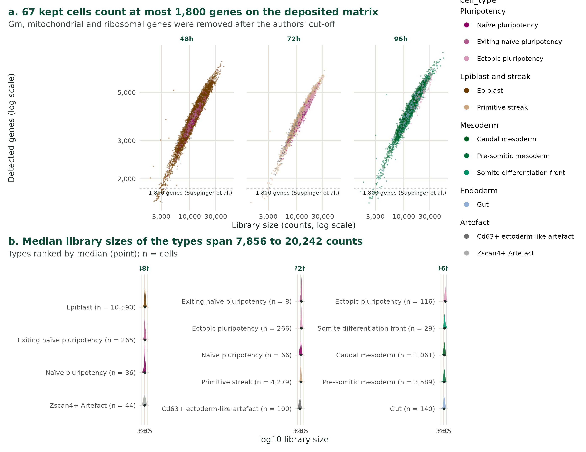
fs_tier1_low_quality_cells.rds.
NoteGenes as applied
- Bulk symbols. Every deposited symbol appears in the
gene_namecolumn of the bulk HTSeq table; the 49 symbols whose rows carry more than one Ensembl id are dropped. - Fractional counts are kept. A UMI compatible with several genes is divided among them by Salmon/Alevin, so 12.8 % of the non-zero entries are fractions such as 1/2, 1/3 or 1/4. They concentrate in multi-copy loci (protocadherin-γ cluster, processed pseudogenes, histone genes) (Figure 3.3). Models that accept non-integer counts (
glmGamPoi,mixOmics) take them as they are. The reasons and references are in 3.1, multi-mapping counts. The within-type correlations of genes that share UMIs are set by the split, not measured, which matters for the covariances of - Presence gate. 9,633 (48 h), 10,751 (72 h) and 9,761 (96 h) genes pass it and enter tier (ii) (Figure 3.2, Figure 3.4).
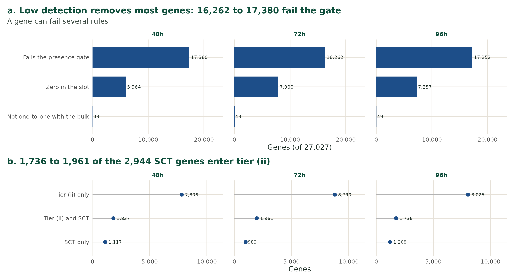
SCT layer (2,944 genes), in tier (ii) only, and in the SCT layer only. Data: fs_tier1_gene_filters.rds.
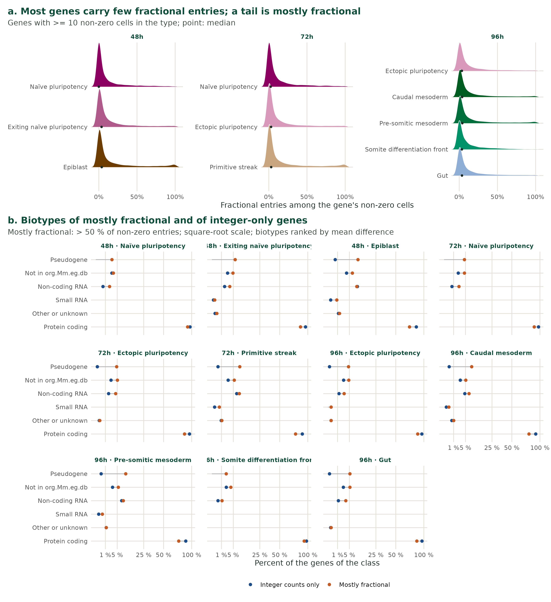
org.Mm.eg.db gene type) among the mostly fractional genes (more than half of the non-zero entries fractional, orange) and among the genes with integer counts only (blue), per type and time; square-root scale. Data: fs_tier1_fractional.rds.
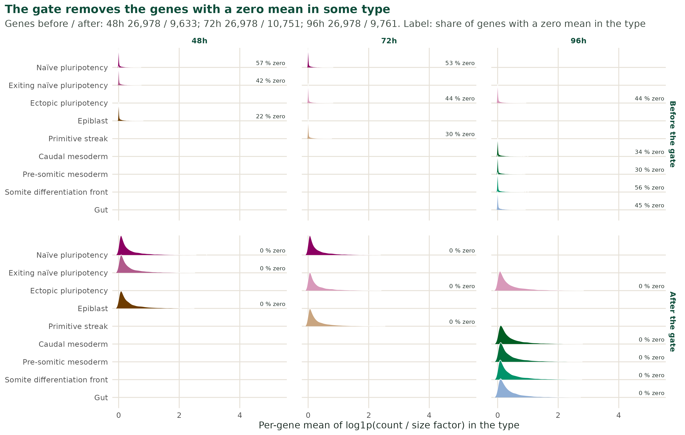
fs_tier1_density_filter.rds.
cell_counts.csv for the scored rows, author_qc_audit.csv for all rows). The eleven scored type × time cells are the units of 1.
| Time | Cell type | Cells | Scored |
|---|---|---|---|
| 48 h | Epiblast | 10,590 | yes |
| 48 h | Exiting naïve pluripotency | 265 | yes |
| 48 h | Naïve pluripotency | 36 | yes |
| 48 h | Zscan4+ artefact | 44 | no (artefact) |
| 72 h | Primitive streak | 4,279 | yes |
| 72 h | Ectopic pluripotency | 266 | yes |
| 72 h | Naïve pluripotency | 66 | yes |
| 72 h | Cd63+ ectoderm-like artefact | 100 | no (artefact) |
| 72 h | Exiting naïve pluripotency | 8 | no (fewer than 20 cells) |
| 96 h | Pre-somitic mesoderm | 3,589 | yes |
| 96 h | Caudal mesoderm | 1,061 | yes |
| 96 h | Gut | 140 | yes |
| 96 h | Ectopic pluripotency | 116 | yes |
| 96 h | Somite differentiation front | 29 | yes |
3.2.2 Knowledge-driven markers
Curated lineage and signalling markers (data/dictionaries/suppinger_celltype_markers.csv) are hard prior knowledge: chosen without the counts, they are united with the ranked panel at each time whatever their score. Their lineage groups are the gene modules of the tier (iii) filter (2). Fifteen of the 19 mouse symbols are in the authors’ 2,944 SCT genes, against about 2.1 expected under a uniform draw from the deposited symbols; Myod1, Pax6, Sox1 and Tfap2a are not (Figure 3.5).
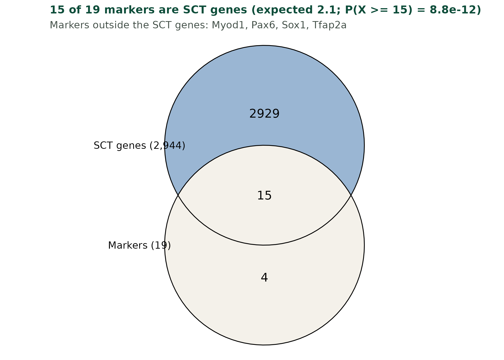
SCT genes. Counts of each region; title: overlap, its expectation under a uniform draw of 19 genes from the 27,027 deposited symbols, and the hypergeometric upper tail. Data: fs_tier1_marker_venn.rds.
3.2.3 Presence gate
With n_{gj} the number of cells of type j in which gene g is non-zero and v_{gj} the within-type variance of its counts, a gene enters the ranking at a given time only if
\sum_{j}n_{gj}\ge 20, \qquad \min_{j}n_{gj}\ge 2 \quad\text{and}\quad \min_{j}v_{gj}>0 . \tag{3.1}
The first condition is the gene filter of Luecken and Theis (2019): a gene must be detected in at least as many cells as the smallest cluster of interest, here the 20 cells below which a type is not scored. It is computed without labels. The two per-type conditions are the necessary conditions for a non-singular within-type covariance; with 29 cells, the somite differentiation front is the smallest scored type. Their reasons, and what they do not guarantee, are in 3.1, presence.
Projections of the gated genes. Figure 3.6 projects the scored cells of each slot on the genes that pass the gate. It is descriptive, not a selection rule.
- Input. The analytic Pearson residuals of the null model M_0 of Equation 3.2 (intercept and library-size offset, gene-wise negative-binomial overdispersion), without
SCTransformand without clipping, centred and not scaled. The sparse PLS-DA keeps 200 genes per component, with the cell type as response. Section 3.8 adds UMAP and the same projections on the authors’SCTresiduals. - Small first axes. The first two principal components explain a few per cent of the variance (axis labels): the type structure is spread over many genes.
- Cell line at 48 h. The epiblast splits into two clouds, and the panels coloured by cell line show that the split is the cell line: the sign of the first component puts 5,309 of the 5,470 B-S (batch 1) epiblast cells on one side and 5,083 of the 5,120 SBR (batch 2) cells on the other. The sPLS-DA, fitted to separate the types, separates the two lines on its second component. Cell line is the main source of variation within that type, which is why the labels of tier (ii) are permuted within batch (Section 3.3.2).
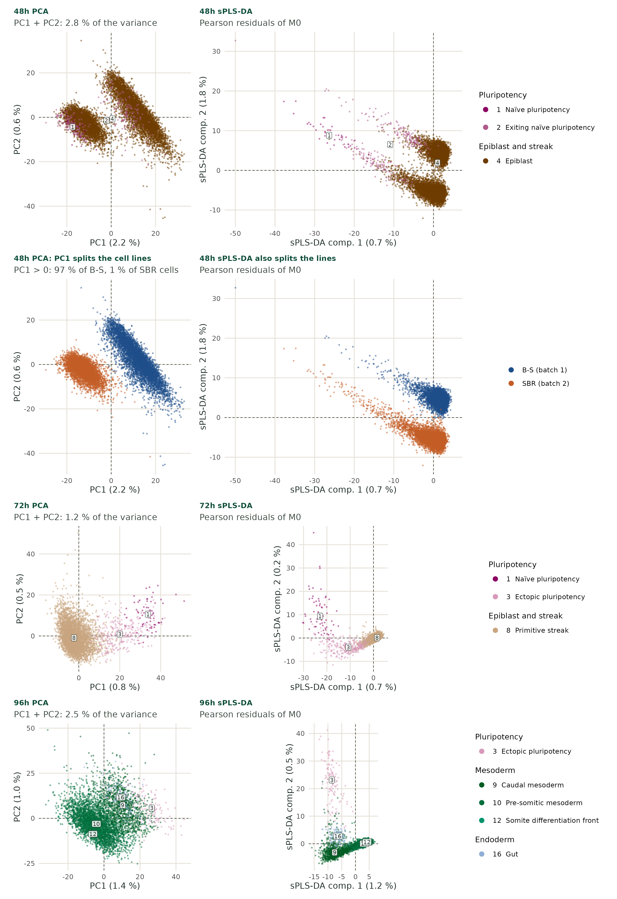
fs_tier1_pca_plsda.rds.
Warning 3.1: Choices of tier (i) that shape the panel
- Two artefact labels are dropped. The Cd63+ ectoderm-like and Zscan4+ cells are treated as culture-stress artefacts; any signal they carry is absent from every later tier.
- Rare types are dropped. A type with fewer than 20 cells in a slot is not scored (exiting naïve pluripotency at 72 h). Its genes can still enter the panel through the other types, but its own moments are never estimated.
- Hard thresholds. The gate uses fixed numbers (20 cells in the slot, 2 cells and a positive variance in every type), set before the ranks were seen. A gene just below them is lost whatever its effect.
- The per-type conditions use the labels. They are not independent of the tier (ii) test of the type effect, which the gene filters computed without labels are 3.1, QC.
- Perfect markers are removed. A gene that is zero in a whole type fails the gate, however well it separates that type.
- Fractional counts are kept. Genes of multi-copy loci stay in the panel with counts set by the Alevin split; their within-type correlations are partly technical.
3.3 Tier (ii): cross-cell consistency
A gene is kept when its counts separate the scored types consistently across the cells of one slot. The theory, and the comparison of the four tests, are in 3.1, cross-cell consistency.
3.3.1 Count-model fit per time
At each of 48 h, 72 h and 96 h, on the genes that pass the presence gate and the cells of the scored types, two negative-binomial GLMs are fitted gene by gene with glmGamPoi::glm_gp() (Ahlmann-Eltze and Huber 2020):
\begin{aligned} M_0:\quad \log m_{gc} &= \beta_{0g}+\log s_{c},\\ M_1:\quad \log m_{gc} &= \beta_{0g}+\beta_{g,j(c)}+\log s_{c}, \end{aligned} \qquad x_{gc}\sim\mathrm{NB}(m_{gc},\psi_{g}),\quad \operatorname{Var}x_{gc}=m_{gc}+m_{gc}^{2}/\psi_{g}, \tag{3.2}
with s_c the size factor of cell c (full RNA library size, the column sum of the deposited counts, divided by its median), passed as offset = log(s_c) with size_factors = 1 so that it is not applied twice. glmGamPoi reports the overdispersion 1/\psi_g. For the likelihood-ratio statistic \psi_g is the gene-wise maximum-likelihood estimate under M_1 and M_0 is refitted at the same \psi_g; for the quasi-likelihood test it is shrunk across genes (Section 3.3.2). Cell type and nothing else is a covariate; cell line is not (Section 2.1).
The ranking statistic is the cell-weighted deviance explained,
R^{2}_{D,g}=1-\frac{\mathcal{D}_g(M_1)}{\mathcal{D}_g(M_0)}, \qquad \Lambda_g=\mathcal{D}_g(M_0)-\mathcal{D}_g(M_1), \tag{3.3}
with both deviances summed over every cell at the same \psi_g, so that \Lambda_g is the likelihood-ratio statistic of the type effect. Each cell has weight one, which is the weighting of the likelihood itself; the type-equal weighting of the legacy rank (Equation 3.7) is not carried over.
3.3.2 Four tests of the type effect
compare_type_effect_tests() (R/02_02_stats_cross_cell.R) computes four tests of the joint type effect (J-1 degrees of freedom) per gene, on the fits of Equation 3.2. They answer one question with different reference laws; the vignette compares their assumptions (3.1, four tests).
| Column prefix | Statistic | Reference law | Implementation |
|---|---|---|---|
lr |
\Lambda_g, analysis of deviance (Equation 3.3) | \chi^{2}_{J-1} | own deviances from the glm_gp() fits |
anova_vst |
one-way ANOVA F on \log(x_{gc}/s_c+y_0), y_0=1/(4\alpha), \alpha=0.05 | F_{J-1,\,C-J} | matrix sums by type |
ql_f |
quasi-likelihood F (Lund et al. 2012) | F with empirical-Bayes denominator df | glmGamPoi::test_de(fit, reduced_design = ~1) |
welch_perm |
Welch’s G on the Pearson residuals of M_0 | label permutation | Freedman–Lane, B shared permutations |
The four tests are joint tests on J-1 degrees of freedom: they detect a type effect in any direction, so they have no one-sided form. Direction enters only in the post hoc contrasts, reported one-sided (Section 3.10) and two-sided (Section 3.11).
TODO-cite: Ahlmann-Eltze & Huber (2023), shifted logarithm TODO-cite: Winkler et al. (2014), Permutation inference for the general linear model, NeuroImage; Freedman-Lane recommended, G statistic Eqs 6-7 TODO-cite: Welch (1951), On the comparison of several mean values
The permutation follows Freedman and Lane (Freedman and Lane 1983): the reduced model is M_0, whose fitted part carries no type information, so permuting its residuals against fixed labels is the same as permuting the labels. Welch’s G is used because it stays pivotal when the within-type variances differ, as recommended by Winkler et al. (2014). One permutation of the C labels is drawn and applied to every gene, B times, and p_g=(1+\#\{G^{*}_g\ge G_g\})/(B+1). B is fixed before the run (the code default is 2,000). Its floor 1/(B+1)\approx5\times10^{-4} limits both the resolution of a gate on this test and Kendall’s \tau, since genes at the floor are tied (3.1, calibration).
Permutations within batch. At 48 h the slot pools the two cell lines, which are the two batches of the object (B-S in batch 1, SBR in batch 2), and the type mix differs between them. An unrestricted permutation would then read a cell-line shift as a type effect. Labels are therefore permuted within batch (strata = batch), which keeps the type counts of each batch; at 72 h and 96 h each slot holds one batch, so the restriction changes nothing there. Cell line is still not a covariate of M_0 or M_1.
Gate, rank and multiplicity. The gate is the permuted Welch G (gate_test = "welch_perm"), chosen before the ranks were seen because it is the only one of the four tests that keeps its false discovery rate when the within-type variances differ (3.1, four tests). Benjamini–Hochberg at 0.05 is applied to its p-values over the genes of each slot, and every gene that passes enters the panel (n_select = Inf), ranked by R^{2}_{D,g}, the share of the M_0 deviance (cell-to-cell variation after the size factor) explained by the differences between types. With m genes tested, the genes at the floor 1/(B+1) all pass when there are at least m/\{0.05(B+1)\} of them (permutation_floor.csv); near the cut the Monte Carlo standard error of a p-value is \sqrt{p(1-p)/B}, so a gene there can cross it with another seed. Each slot is gated on its own, so the union over the three slots, which feeds tier (iii), has no single false discovery rate.
A stricter tier, reported only. A gene is at the floor when none of the B=2,000 permuted G^{*} of that gene reached its observed G: 637 / 1,806 / 2,920 genes at 48, 72 and 96 h. A null gene lands there with probability 1/(B+1), so with all genes null about m/(B+1) would, an estimated false discovery rate of 0.8 / 0.3 / 0.2 % for these sets. The floor is a property of each gene’s own permutations, not a comparison between genes, and it moves with B; the floor genes are exported (selected_floor_<time>.csv) but the panel stays the Benjamini–Hochberg set.
Calibration. The four tests were rerun on one within-batch permutation of the labels (seed 20261102), a null by construction; how such a null is built and how its QQ plot and p-value histogram are read is in 3.1, reading a null calibration.
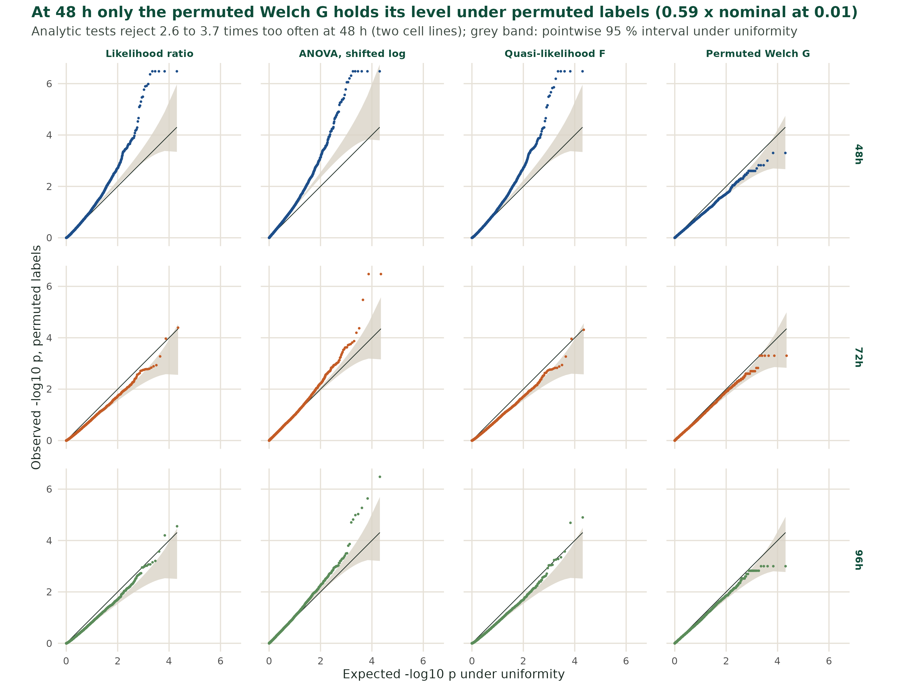
qqplotr), with the identity line and the pointwise 95 % band. Points above the band are too many small p-values (anti-conservative). Values above the panel range (one ANOVA gene) are drawn at its top edge. At 48 h, at the 0.01 level, the likelihood ratio rejects 2.7 times the nominal rate, the quasi-likelihood F 2.6 times, the shifted-log ANOVA 3.7 times and the permuted Welch G 0.59 times. Source: cross_cell.rds, element null_tests.
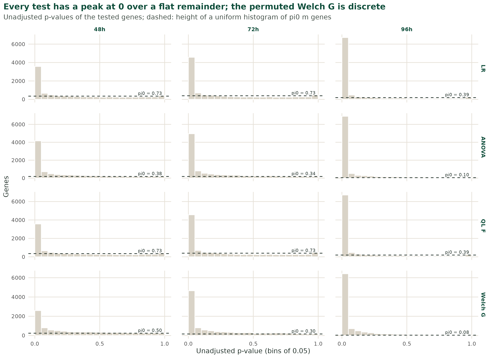
qvalue::pi0est(), value in each panel). Every test shows a peak at 0 over a flat remainder; the permuted Welch G is discrete (values k/(B+1)). Source: cross_cell.rds, element tests.
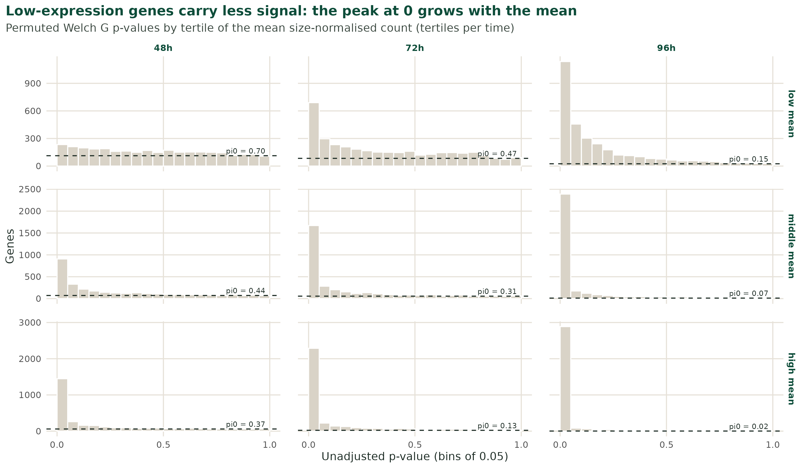
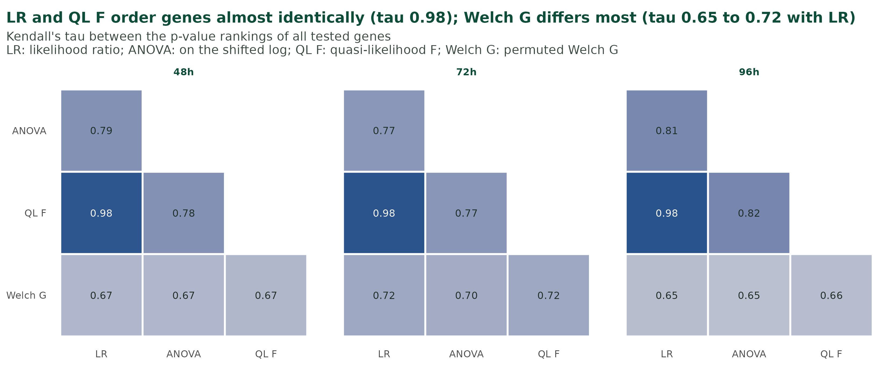
kendall_<time>.csv.
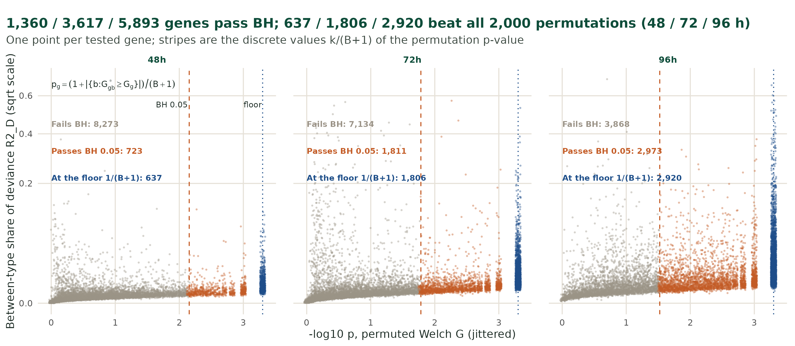
selected_<time>.csv, ordered by R^{2}_{D}); the largest R^{2}_{D} is 0.66 (Gpx2, 96 h) and the median among passing genes 0.003, 0.006 and 0.010. Source: cross_cell.rds, element ranked.
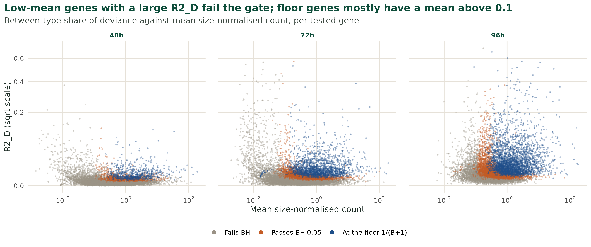
Overdispersion and the Poisson boundary. With \operatorname{Var}x_{gc}=m_{gc}+\phi_g m_{gc}^{2}, \phi_g=1/\psi_g, the NB law is a Poisson measurement of a Gamma-distributed expression level, and \phi_g is the squared coefficient of variation of that level within a type after the size factor (5.1, measurement model, 5.1, expression models) (Sarkar and Stephens 2021, Box 1 and Table 1, PDF pp. 2, 4). glmGamPoi returns \hat\phi_g=0 when the likelihood is largest at the Poisson boundary: the counts of the gene vary no more than Poisson sampling within each type, a point-mass expression model or “Poisson gene”. It is a failure to detect extra variation, not proof of none: these genes have means of 0.01 to 0.3, where \phi m^{2} is small next to m and the information on \phi is low. Fang & Pachter (2025, PDF pp. 6, 11) call genes Poisson when their variance stays within the Poisson range after extrinsic (size) noise, and find them to be low-variability rather than low-expression genes TODO-cite: Fang & Pachter 2025, Extrinsic biological stochasticity and technical noise normalization of single-cell RNA sequencing data, bioRxiv, doi:10.1101/2025.05.11.653373. At the other end, a few genes whose counts sit in a handful of cells have a likelihood that grows without bound in \phi (upper boundary).
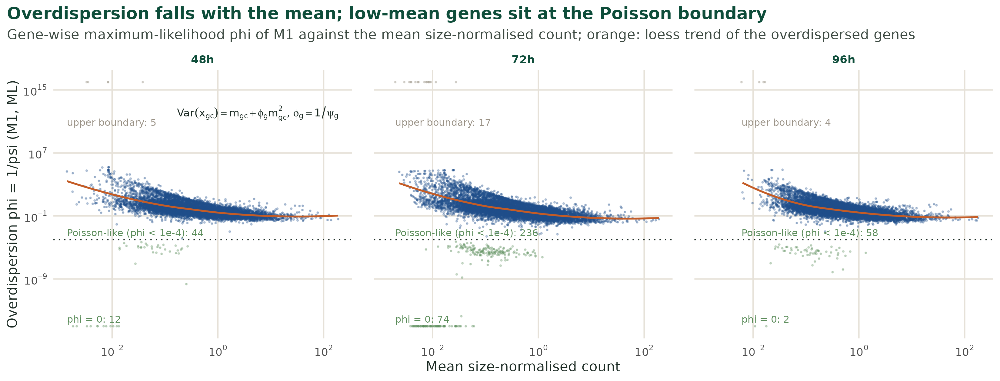
glmGamPoi drawn on the bottom strip; grey: upper boundary (\hat\phi_g>10^{10}); blue: the others. Counts per class in each panel; the NB variance is written in the first. Source: cross_cell.rds, element tests, and scored_slots.rds.
Tip 3.1: Conclusion of tier (ii)
- Calibration. At 48 h, where the slot pools two cell lines, the three analytic tests reject 2.6 to 3.7 times the nominal rate under permuted labels, because a within-batch permutation keeps the type–cell-line association and these tests do not model the cell line. The permuted Welch G rejects 0.59 times the nominal rate. At 72 h and 96 h (one batch each) every test is at or below its nominal rate except the ANOVA (1.5 to 1.6 times at 0.01).
- Panel. Every gene that passes the calibrated gate (permuted Welch G, BH at 0.05): 1,360 / 3,617 / 5,893 genes at 48, 72 and 96 h, 6,749 across the three times. 637 / 1,806 / 2,920 of them are at the permutation floor (stricter tier, reported only). Most effects are small; their weight is left to the model (tier (iv), Section 3.5).
- Which type drives each gene is tested in the appendix (Section 3.10).
| Question | Resampling | Unit |
|---|---|---|
| Is the nominal tail of each test accurate? | one label permutation applied to all genes | labels within batch, within the slot |
| Which genes pass the gate? | B shared label permutations (Freedman–Lane, Welch’s G) | labels within batch, within the slot |
Caution 3.1: Labels and effect sizes
Cell types are the authors’ annotations, fixed before any statistic is computed here. Labels refined on the same counts would make every permutation p-value anti-conservative (González-Delgado et al. 2025). TODO-open question: if the fit of tier (iv) cannot absorb the many small effects, an effect-size floor chosen from the data (for example from the null distribution of R^{2}_{D} under within-batch permutations) is the next step.
3.4 Tier (iii): cross-platform consistency
This tier compares the bulk with the single-cell reference, so it needs a matched bulk (Figure 2.1). It removes genes whose bulk expression the reference cannot produce. The approaches reviewed, the model behind the statistic and its identifiability are in 3.1, cross-platform consistency; the comparison table of second-generation methods is in 3.1, review table.
3.4.1 Outlier cells and genes
Two fits are diagnosed with Cook’s distance, which combines leverage and residual (3.1, leverage and influence).
- Cells, in the M_1 fit of each gene (Equation 3.2).
cook_cells()uses the IRLS weight w_{gc}=m_{gc}^{2}/V(m_{gc}); in a one-way design the leverage is h_{gc}=w_{gc}/\sum_{c'\in j(c)}w_{gc'}, so a cell of the 29-cell somite differentiation front has a leverage near 1/29 and an epiblast cell near 1/10{,}590. Cook’s distance is r^{P\,2}_{gc}h_{gc}/\{J(1-h_{gc})^{2}\} with dispersion scale 1. - Genes, in the weighted regression of each bulk replicate on the reference signature, across genes.
cook_genes()takes the composition and the final weights of the plug-in fit- and computes the hat values on the types with a positive coefficient.
A cell or a gene is flagged only when its leverage and its standardised residual are both large (defaults: leverage above three times its mean, J/C for cells and J/G for genes, and |r^{SP}|>3). High leverage alone marks a rare type or a highly expressed marker, which carries information; a large residual alone marks an ordinary tail count. Nothing is clipped or down-weighted: flagged cells and genes are listed with their type and counts, and whether to drop one is decided by reading that list.
Show the code
# Not run. After fs-omnibus-call and fs-bulk-consistency-call: panel
# genes, reference counts, labels, size factors and the tier (iii) plug-in.
source("R/02_03_stats_influence.R")
outlier_cells <- lapply(times, function(tm) {
cook_cells(sc[[tm]][panel, ], cell_type[[tm]], size_factors = sf[[tm]])
})
outlier_genes <- lapply(times, function(tm) {
r <- tail_res[[tm]]
cook_genes(
bulk[[tm]][rownames(r$moments$mu), , drop = FALSE],
r$moments$mu,
coef = matrix(r$plugin$composition$coef, nrow = ncol(r$moments$mu)),
weights = r$plugin$weights
)
})3.4.2 Bulk consistency filter
The filter needs a single-cell slot and a bulk sample of the same condition.
- Matched pairs. The single-cell reference matches the standard-Wnt bulk at all three times used in this book: single-cell 48 h (B-S and SBR pooled), 72 h (SBR) and 96 h (B-S), each against three biological replicates of the standard-Wnt bulk at that time.
- No match for early Wnt. The early-Wnt bulk (Wnt pulse at 24 h) has no single-cell counterpart at any time, so no bulk–reference comparison is possible on that arm.
- Fit. At each of the three matched times independently, in two steps. First, a \boldsymbol{p}-free check: the distance of each normalised bulk value to the range of the type means, with RNA-Sieve’s range bound and median-absolute-deviation outlier rule (Erdmann-Pham et al. 2021) (
bulk_consistency_filter(), a heuristic). Second, the tail statements below, on a statistic that uses a plug-in composition. - Apply (planned, not applied). The rule was to remove a gene flagged at any of the three matched times from the panel at every time, including the early-Wnt arm. The run below shows that the model-based statements flag 92 to 95 % of the panel under A3, and still 70 to 72 % after a cross-fitted gene-wise platform ratio, so the rule is not applied (see Results).
- Drift across times. With three matched times the flags can be compared across 48 h, 72 h and 96 h.
platform_drift_summary()classifies each gene by the times at which it is flagged (T4 by default) and by the sign of its standardised discrepancy D_{gi}/\operatorname{sd}D_{gi}: flagged at several times with one sign supports treating the platform effect as a property of the gene; flagged at one time only does not. - Code. Tier (iii) has two files:
R/02_03_stats_influence.R(Cook’s distance for cells and genes, Section 3.4.1) andR/02_03_stats_tail_bounds.R(range check, plug-in, tail statements, quantile band, drift, transcript length and the gene-wise platform ratio).scripts/02_03_stats_cross_platform_consistency.Rruns both. It has been run; its outputs inoutput/feature_selection/tier_03/aretail_order_<time>.csv(A3),platform_drift.csv(flagged genes only),platform_log_ratio.csv,platform_length.csv,platform_ratio.csv(cross-fitted \log_2\hat b_g and its standard error, per held-out time and method),a3_shift_summary.csv(one row per time and variant),settings.csvandcross_platform.rds(every table, tracked with DVC). The figures are drawn byscripts/02_03_vis_cross_platform.R.
Plug-in composition: deMixSC, not plain NNLS. For each bulk replicate i, plugin_composition_demixsc() fits the bulk counts y_{gi} on the per-cell type means of the reference by iterated weighted non-negative least squares, as deMixSC does: weights 1/(\hat y_{gi}^{2}+(y_{gi}-\hat y_{gi})^{2}+c) with c=2. Plain NNLS is not used as a plug-in, for two reasons.
- Weights of the model. Under DeCovarT the variance of a bulk count is gene-specific and depends on \boldsymbol{p} and on the type means. Unweighted NNLS gives every gene the same weight, so the most expressed genes decide \hat{\boldsymbol{p}}. The deMixSC weights are inverse-variance weights that follow the current fit: the diagonal, plug-in counterpart of the generalised least squares that DeCovarT solves (Section 5.1). Of the two, it is the closer to the final model.
- Robustness to the genes under test. The residual term (y_{gi}-\hat y_{gi})^{2} down-weights the genes that the bulk expresses far from the reference, which are the genes this filter must find, so that they do not bias \hat{\boldsymbol{p}} and, in turn, their own statistic.
Non-negative least squares remains only the solver of each reweighting step (nnls::nnls(), the Lawson–Hanson algorithm). deMixSC also calibrates a gene set G2 on a same-aliquot benchmark; none exists for Suppinger, so G2 is empty. a_i is the sum of the coefficients and \hat p_{ji} the coefficients divided by a_i; the extra overdispersion between platforms is fixed at 1. MuSiC (Wang et al. 2019) is not used, because its weights need at least two donors. What the plug-in costs is in 3.1, plug-in.
TODO-cite: deMixSC (Eq. 4, PDF p. 12), iterated W-NNLS weights TODO-cite: Lawson & Hanson (1974), Solving Least Squares Problems, ch. 23
Note 3.2: Why deMixSC, among the univariate deconvolutions
The plug-in must give a usable composition at each of the three matched times, and it must not be pulled by the genes under test. The benchmark of chapter 4 (Section 5.1.6) ran ten univariate methods: deMixSC, DWLS, RLM, BayesPrism, ReDeconv, RNA-Sieve, SCDC, MEAD, DECALS and NNLS. It also ran deMixSC with its bulk/pseudo-bulk alignment. MuSiC was not run, because it needs two donors or more. The figures below are RMSEs against the scored composition of the reference (benchmark_metrics*.csv).
- Lowest pooled error. deMixSC weighted NNLS has the lowest pooled RMSE on the Welch panel and on the R²_D ≥ 1 % panel.
- Welch: 0.054, against 0.097 (DWLS), 0.100 (MEAD), 0.113 (ReDeconv), 0.117 (RNA-Sieve) and 0.354 (NNLS).
- R²_D ≥ 1 %: 0.069, against 0.141 (DWLS).
- Not the best at every time.
- At 48 h most methods put all of the composition on epiblast and tie at 0.021.
- On the Welch panel, ReDeconv is best at 72 h (0.026 against 0.035) and MEAD at 96 h (0.048 against 0.071).
- The smallest worst-time error. What deMixSC does have is the smallest worst-time error. That is the property a filter applied at every time needs.
- Welch: 0.071, against 0.135 (DWLS) to 0.479 (NNLS) for the other methods.
- R²_D ≥ 1 %: 0.091, against 0.185 (DWLS) to 0.479 (NNLS).
- Aitchison distance. Measured by the Aitchison distance with zeros replaced at 0.001, ReDeconv is better on the Welch panel (2.03 against 2.41).
- The gap is at 72 h (0.55 against 2.35). There 44 % of the deMixSC shares are exactly 0, an NNLS boundary solution, and none of ReDeconv’s are (
proportions_long.csv). - The log-ratio geometry puts a zero infinitely far away, so the distance depends on the replacement value. With zeros replaced at 0.01, deMixSC is better pooled (0.84 against 1.25).
- ReDeconv maximises a Gaussian likelihood whose variance is linear in the composition (Lu et al. 2025, Eq. 5, p. 14). This is the diagonal of DeCovarT’s model with the variance scale tied to the mean scale. Its estimates stay inside the simplex, which the Aitchison distance rewards.
- The gap is at 72 h (0.55 against 2.35). There 44 % of the deMixSC shares are exactly 0, an NNLS boundary solution, and none of ReDeconv’s are (
- Theory did not decide the choice. ReDeconv and RNA-Sieve are the methods closest in theory to DeCovarT, but neither keeps a low error at all three times. Two properties of deMixSC count for the filter:
- its weights follow the fitted mean, as the variance of DeCovarT does;
- its residual term down-weights the genes under test.
- Alignment does not help. With its bulk/pseudo-bulk alignment (other times), deMixSC is worse (0.266, Welch), so G_2 stays empty.
Statistic. With \hat{\tilde\mu}_{gj} the mean raw count per cell of type j over its C_j reference cells, and \hat\psi_{gj} the negative-binomial size matched to their mean and variance (type_moments_nb(); raw counts, because a bulk is a sum of raw cell profiles),
D_{gi}=\frac{y_{gi}}{a_i}-\sum_{j=1}^{J}\hat p_{ji}\,\hat{\tilde\mu}_{gj}, \qquad S_{Mi}=\sum_{g\in M}\frac{D_{gi}}{\operatorname{sd}D_{gi}}, \tag{3.4}
for a gene g and a module M; \operatorname{sd}D_{gi} is the negative-binomial standard deviation with n_i=a_i bulk cells.
Statements. Each is applied at \alpha/2=0.01 per tail, with the plug-in values treated as known (3.1, five bounds). tail_threshold() returns the threshold t_{0.01} of each, from the exact cumulant generating functions and their Legendre transforms for the Chernoff statements.
R/02_03_stats_tail_bounds.R. tail_threshold() dispatches one function per statement.
| Statement | method |
Gene | Module | Kind |
|---|---|---|---|---|
| T1, Gaussian (Lindeberg–Feller) | clt |
yes | yes, independent genes | approximation |
| T1-log, log-normal ratio (delta method) | clt_log |
yes | no | approximation |
| T2, dependency-graph CLT | clt_dep |
no | yes | approximation |
| T3, Chernoff with Poisson CGFs | poisson |
yes | yes, independent genes | bound for Poisson counts only |
| T4, Chernoff with the NB CGF | nb |
yes | yes, independent genes | finite-sample bound |
| T5, NB Chernoff after a proper colouring | nb_dep |
no | yes | finite-sample bound |
Quantile band, quantreg::rq() at \tau=0.01, 0.99 |
— | yes | no | model-free reference |
TODO-cite: Janson (2004), Large deviations for sums of partly dependent random variables TODO-cite: Chen & Shao (2004), Normal approximation under local dependence TODO-cite: Koenker & Bassett (1978), Regression quantiles
- Modules. The lineage groups (
cell_type_excel) of the signalling dictionary of Section 3.2.2. They were written before any count was seen, so the module flags are not circular. Each group has at most four genes, and a module with fewer than two panel genes is skipped. - Dependency graph. Inside a module,
module_dependency_graph()joins the gene pairs with the largest within-type correlations, with maximum degree \le10 and mean degree \le3. With at most four genes both caps are met by construction. Genes without an edge are assumed independent; T2 uses the within-type correlations on the edges, T5 only the colouring of the graph (greedy_colouring()). - Quantile band.
quantile_band_flags()regresses y_{gi}/a_i on \sum_j\hat p_{ji}\hat{\tilde\mu}_{gj} across the genes of one replicate, at \tau=0.01 and 0.99, without a count model. Each bound above bounds a quantile of D_{gi} under a model; the band estimates it from the genes, assuming they are exchangeable given the fitted value (3.1, comparison of the bounds). - Ranking on the simulated tails. The vignette compares the statements on one gene and one module, which is not a Suppinger result (3.1, thresholds; gene tails; module tails). Per gene, T4 has the largest threshold and does not under-cover. Per module, T5 has the largest threshold and does not under-cover. T3 is far too small for a high-expression gene.
- Multiplicity, two counts. The level 0.01 per tail is per gene. In the vignette, that level flags about 60 consistent genes out of about 3,000: that count is the vignette’s one comparison. Here, the Suppinger panel is 6,759 genes times three replicates, which would give about 200 (gene, replicate) flags per tail and statement if the model held. The run flags about 6,300 genes (below).
Results. The panel is the 6,749 genes that pass the tier (ii) gate at any time, united with the mapped markers: 6,759 genes, all of them in each slot. All three variants below run on that panel.
- What the tail statements assume. Every statement T1 to T5 tests D_{gi} against its spread under assumption A3: each gene has the same mean count per cell in the bulk as in the reference, so the bulk differs from a_i\sum_j\hat p_{ji}\hat{\tilde\mu}_{gj} only by the negative-binomial sampling of a_i cells. With a_i\approx1{,}200 to 1{,}900 cells that sampling averages out, so \operatorname{sd}D_{gi} is small, and a gene is flagged when D_{gi} is more than about 2.3 of these standard deviations from 0 (T1; the Chernoff statements are somewhat wider).
- What the data show under A3. The median |D_{gi}|/\operatorname{sd}D_{gi} is 17 at every time: the discrepancies are about 17 times larger, and their variance about 300 times larger, than A3 allows; 91 to 92 % of the (gene, replicate) values lie beyond \pm2.33, where 2 % are expected (Figure 3.15). T4, the most conservative per gene, flags 6,233 (48 h), 6,328 (72 h) and 6,401 (96 h) of the 6,759 genes (
a3_shift_summary.csv, Figure 3.17). These flags measure the failure of A3, not a defect of individual genes. - The discrepancy is a gene-wise ratio. For each gene and time, the mean over replicates of \log_2\{(y_{gi}/a_i)/\sum_j\hat
p_{ji}\hat{\tilde\mu}_{gj}\} (
platform_log_ratio()) has an interquartile range of 2.0 to 2.2 across genes: half the genes are more than 2-fold away from the reference (platform_log_ratio.csv). The same genes are off in the same direction at every time: the Spearman correlation of the ratios is 0.96 (48 h–72 h), 0.95 (72 h–96 h) and 0.94 (48 h–96 h) (Figure 3.18). 5,987 genes are flagged by T4 at two or three times with one sign; the 480 flagged with a sign change and the 254 flagged at one time only sit near a ratio of 0, where a small difference flips the sign or the flag. - The ratio follows transcript length. The bulk is a full-length library and the reference a 3′ UMI library (protocols below), so a gene’s bulk reads grow with its transcript length and its reference counts do not. The prediction is a slope of 1 of the log2 ratio on log2 length. The median-regression slope is 1.04 (48 h, 95 % gene-bootstrap interval 1.00 to 1.08), 1.15 (72 h, 1.10 to 1.20) and 1.05 (96 h, 1.00 to 1.10); Spearman’s correlation is 0.54 to 0.58, and a loess on length explains 31 to 34 % of the variance of the ratio (
platform_length.csv, Figure 3.14). Length is a large part of the platform effect, but two thirds of the gene-to-gene variation remain. The bootstrap treats genes as independent, so the intervals are too narrow if genes are correlated. - Dividing by a cross-fitted ratio. With the free gene-wise ratio (estimated on the two other times), the interquartile range of the residual log2 ratio falls from 2.0–2.2 to 0.39–0.43, the share of genes more than 2-fold off from 50–54 % to 2–4 %, and the range rule flags 83, 336 and 100 genes instead of 3,201, 3,846 and 2,879 (Figure 3.16, Figure 3.17). The ratio learnt at 72 and 96 h (primitive streak, mesoderm) transfers to the epiblast bulk at 48 h, and conversely, so for most genes the effect belongs to the gene, not to a type. The length-only ratio removes less: residual interquartile range 1.5 to 1.6, range flags 2,022 to 2,973.
- A residual remains. With the gene-wise ratio the median |z| is 2.0 to 2.2, and 44 to 48 % of the values lie beyond \pm2.33 instead of 2 %; T4 still flags 4,707, 4,855 and 4,866 genes (Figure 3.15). The residual log ratio (interquartile range about 0.4 in log2 units, a 30 % spread) is far larger than both the negative-binomial sampling of the bulk and the uncertainty of the ratio itself (median standard error of \log_2\hat b_g 0.06 to 0.07,
platform_ratio.csv). Three sources are possible, none tested here: a ratio that depends on the type as well as the gene, which is not identified without paired measurements; biological differences between the gastruloids profiled in bulk and in single cell, which are different specimens; and errors of the plug-in composition. In these three variants the bulk cell count is fixed at a_i, so no between-platform overdispersion enters \operatorname{sd}D_{gi}; the fourth variant below estimates one per replicate. - Effective cell count. With the gene-wise ratio, the deMixSC plug-in fitted on the Welch panel and a_i replaced by n_{\text{eff},i}, the median n_{\text{eff},i} is 63 (48 h), 51 (72 h) and 40 (96 h), against a_i of 1,140 to 1,930: n_{\text{eff},i}/a_i is 0.026 to 0.034, a bulk variance 30 to 38 times the negative-binomial one (
a3_shift_summary.csv, columnsmedian_n_bulk,median_n_over_a). The median |z| is 0.674 at every time by construction (n_{\text{eff}} solves \operatorname{median}z^{2}=0.455), so it says nothing about fit; the tails do. 7.2, 5.5 and 6.5 % of the (gene, replicate) values lie beyond \pm2.33, against 2 % expected (Figure 3.15). T4 flags 489, 368 and 419 genes (7.2, 5.4 and 6.2 % of the panel), T1 678, 574 and 713, instead of 4,707 to 4,866 with n_i=a_i (Figure 3.17). These flags now mean a tail heavier than that of the typical gene of the replicate, not a failure of A3. The range and MAD rules use no cell count and do not change; the quantile band flags 190 to 205 genes. - Multivariate test. The selected DeCovarT model of Section 5.2.6.3 (Welch panel, raw shrinkage at \hat\lambda=0.1, 0.5 and 0.5, free c_i and \varphi_i) fitted to each replicate, without a gene-wise ratio, gives \hat n_i=\hat c_i^{2}/\hat\varphi_i of 1.3 to 1.4 (48 h), 1.3 (72 h) and 1.4 to 1.9 (96 h); with the robust scale \tilde\varphi_i, \hat c_i^{2}/\tilde\varphi_i is 2.6 to 3.9 (
multivariate_scales.csv). The maximum-likelihood \hat\varphi_i is two to three times the robust one (\kappa of 0.37 to 0.52): a minority of genes with large residuals sets it. Both counts are about 10 to 47 times smaller than n_{\text{eff},i}. Our reading, not tested: the gene-wise ratio, absent from the multivariate model, is absorbed by \varphi_i; under A3 the univariate variance was about 300 times the negative-binomial one, which corresponds to a count of about 6. - Multivariate flags. With the robust scale, 7.0, 6.8 and 6.1 % of the conditional statistics z_{gi} lie beyond \pm2.33 (diagonal statistic: 6.0, 6.6 and 5.9 %), against 2 % expected. A gene is flagged in at least one replicate in 105 of 1,360 (48 h), 282 of 3,617 (72 h) and 458 of 5,893 (96 h) Welch genes, 7.7 to 7.8 %, where 5.9 % is expected under the model (1-0.98^{3};
multivariate_flags.csv, Figure 3.20). The conditional and diagonal flags share 39 to 46 % of their union (Jaccard index); the conditional and univariate T4 flags share 4 to 7 % (multivariate_overlap.csv). The two tests ask different questions: the univariate one tests the residual left by the gene-wise ratio, the multivariate one tests the raw bulk against the correlated genes of the same replicate. Few dictionary modules are tested on the Welch genes (none at 48 h, four at 72 h, three at 96 h); none is flagged. - Power. For a shift of three marginal standard deviations in one gene, the conditional statistic moves \sqrt{\Sigma_{gg}W_{gg}} times as far as the diagonal one: median 1.15 (48 h), 1.11 (72 h) and 1.16 (96 h), 10 % and 90 % quantiles 1.09 and 1.37. The mean power at 0.01 per tail rises from 0.75 to 0.88, 0.85 and 0.88, and is higher for every gene (
multivariate_power.csv). These are computed under the fitted covariance, not from injected shifts in the data. - Two side effects. The MAD rules flag more genes with the ratio (659 to 853 against 367 to 586), because one of their summaries is a bulk-to-reference ratio. The model-free quantile band flags 190 to 205 genes with the ratio and 162 to 170 under A3, 2.4 to 3.0 % of the panel, near the 2 % it is fitted for. The residual log ratios are negatively correlated between times (Spearman −0.23 to −0.44): this is built in by cross-fitting, since each time’s ratio is the average of the two others, and is not a drift.
- Plug-in composition. Under A3, epiblast takes all of the 48 h bulk and the primitive streak all of the 72 h bulk (shares of at least 0.999), the types that dominate the reference (97 % and 93 % of the scored cells); at 96 h pre-somitic mesoderm takes 0.71 and caudal mesoderm 0.28. With the gene-wise ratio, the 48 h bulk becomes 0.89 epiblast and 0.10 exiting naïve pluripotency, 72 h is unchanged (0.99 primitive streak), and the 96 h composition inverts: caudal mesoderm 0.72, pre-somitic mesoderm 0.26 (Figure 3.19). The ratio used at 96 h was learnt at 48 and 72 h, where neither mesoderm type exists, so the genes that separate the two types carry ratios estimated from other cell states. Fitting the plug-in on the Welch genes only does not undo the inversion: caudal mesoderm 0.70, pre-somitic mesoderm 0.27 (ochre in Figure 3.19). The selected DeCovarT model, without a ratio, gives pre-somitic mesoderm 0.70 and caudal mesoderm 0.26 at 96 h, close to the scored-cell shares of 0.73 and 0.21 (
observed_proportions.csv). No ground truth exists for these bulk samples: the inversion shows that the plug-in composition is not robust to the platform model, not which composition is right. - Cook’s distance. No gene is flagged in the weighted bulk fit at any time. This is a property of the deMixSC weights, not a finding: with w_g=1/(\hat y_g^{2}+e_g^{2}+c), \sqrt{w_g}\,|e_g|<1, so the standardised residual is bounded (it stays within \pm1.7) and never reaches 3. Among cells, 22,757 to 28,481 (gene, cell) pairs are flagged per time, all in the small types, where a cell’s leverage can exceed 3J/C (Figure 3.21).
Gene-wise platform ratio: method. The two libraries differ by design. The bulk (GSE229386) is an Illumina Stranded mRNA Ligation library of poly(A) RNA, aligned with STAR and counted with HTSeq on GENCODE vM24 (mm10); the reference (GSE229513) is 10x Genomics Single Cell 3′ v3, quantified with Salmon/Alevin on GENCODE M24 (GRCm38) (GEO series records). Full-length single-cell protocols show the length bias of bulk RNA-seq and UMI protocols do not TODO-cite: Phipson, Zappia & Oshlack 2017, Gene length and detection bias in single cell RNA sequencing protocols, F1000Research 6:595, doi:10.12688/f1000research.11290.1; the bulk side is the transcript-length bias of RNA-seq counts TODO-cite: Oshlack & Wakefield 2009, Transcript length bias in RNA-seq data confounds systems biology, Biology Direct 4:14, doi:10.1186/1745-6150-4-14. The model, its identifiability conditions and the tail statements with a plug-in ratio are in 3.1, plug-in platform ratio. As applied here:
- Length.
gene_transcript_length()averages the exonic length of the UCSC knownGene transcripts of each gene (TxDb.Mmusculus.UCSC.mm10.knownGene3.10.0,GenomicFeatures::transcriptLengths()), matched by Ensembl id throughorg.Mm.eg.db, then by symbol: 6,699 genes by Ensembl id, 28 by symbol, 32 without a length. That annotation is based on GENCODE VM23, one release before the authors’ vM24. Adapted fromannotate_genes_local()of GastroDeconv2FateMap, which uses the genomic span instead (introns included). - Three variants, no filtering. (i) A3, no ratio. (ii) A ratio from length: a robust loess of the per-gene median log ratio on log2 length. (iii) A free gene-wise ratio: the deMixSC plug-in on y_{gi}/\hat b_g alternates with \log\hat b_g= median over the pooled replicates of the log ratio, until the largest change is below 10^{-3} (17 to 22 rounds;
estimate_platform_ratio()). In (ii) and- \operatorname{median}_g\log\hat b_g=0, since a_i absorbs a common factor.
- Cross-fitting. The ratio used at one time is estimated on the six replicates of the two other times (
cross_fit_platform_ratio()), so it cannot absorb the residual it is meant to test, and its transfer across compositions is what is tested. - Statistic.
bulk_tail_filter(platform_ratio, platform_var)divides the bulk by \hat b_g before the plug-in fit, and adds the delta-method term (\sum_j\hat p_{ji}\hat{\tilde\mu}_{gj})^{2}\operatorname{Var}\log\hat b_g to the variance of D_{gi} in z and in T1; T1-log, T3, T4 and the module statements treat \hat b_g as known. The RNA-Sieve range and MAD rules need no composition and run on y_{gi}/\hat b_g as well. - Fourth variant: effective cell count. The gene-wise ratio of (iii), with the plug-in fitted on the Welch genes of the slot (
plugin_genes,output/grn/plugin/gene_sets.csv; 1,360, 3,617 and 5,893 of the 6,759 panel genes, so the plug-in still shares genes with the tested set) andn_bulk = "moment":estimate_effective_cells()solves \operatorname{median}_g z_{gi}^{2}(n)=0.455 on (10^{-3},a_i] withuniroot(), and n_{\text{eff},i} replaces a_i in every statement. The quantile band still divides by a_i. Theory: 3.1, effective cell count. T3 (Poisson) keeps no dispersion and is a reference row only. - Multivariate test.
scripts/02_03_stats_multivariate_consistency.Rrebuilds \hat\Sigma_j(\hat\lambda) withbuild_sigma()frommoments_<time>_welch.rds, takes \hat\lambda fromlambda_selection.csv(Welch, standard arm, shrinkage, selected level), fits each replicate withfit_decovart_once(..., "lbfgsb")and callsmultivariate_tail_filter()at 0.01 per tail with the robust scale. Bulk counts enter raw, with no gene-wise ratio. Theory: 3.1, multivariate discrepancy. Self-checks on simulated data, seed 20261118, run first: n_{\text{eff}} recovers a known count within 10 %, and under the model the flag share is within 0.005 of 2 % and the module variance within 0.25 of 1.
What this changes: no gene is removed at this tier. A cross-fitted gene-wise ratio removes most of the platform shift, so it belongs in the model of tier (iv) rather than in a filter. With an effective cell count per replicate, the univariate tail statements flag 5 to 7 % of the panel rather than 70 %, and become usable as a screen for genes with heavy tails. The multivariate test flags 8 % of the Welch genes, where 5.9 % is expected, and its flags barely overlap the univariate ones (Jaccard index 0.04 to 0.08). Neither set is removed: without a paired measurement, a flag cannot be told apart from a gene-specific platform effect that the multivariate model leaves in \varphi_i.
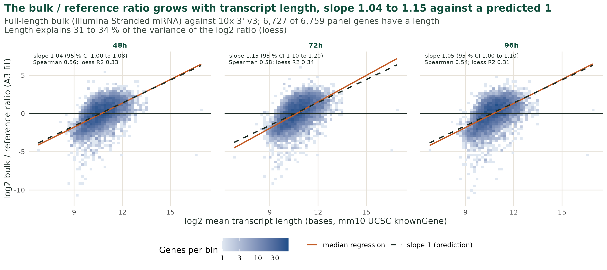
cross_platform.rds, elements log_ratio, lengths and length_test; scripts/02_03_vis_cross_platform.R.
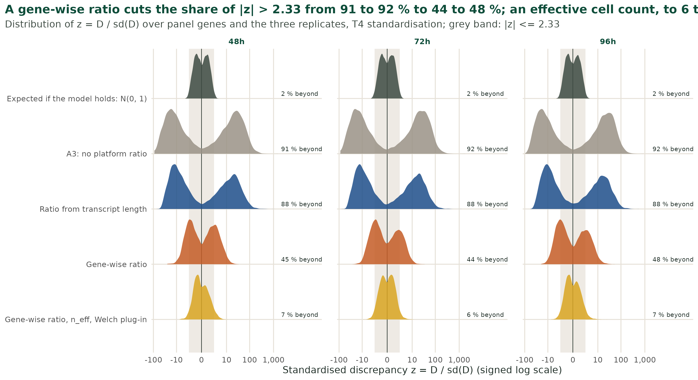
cross_platform.rds, element variants.
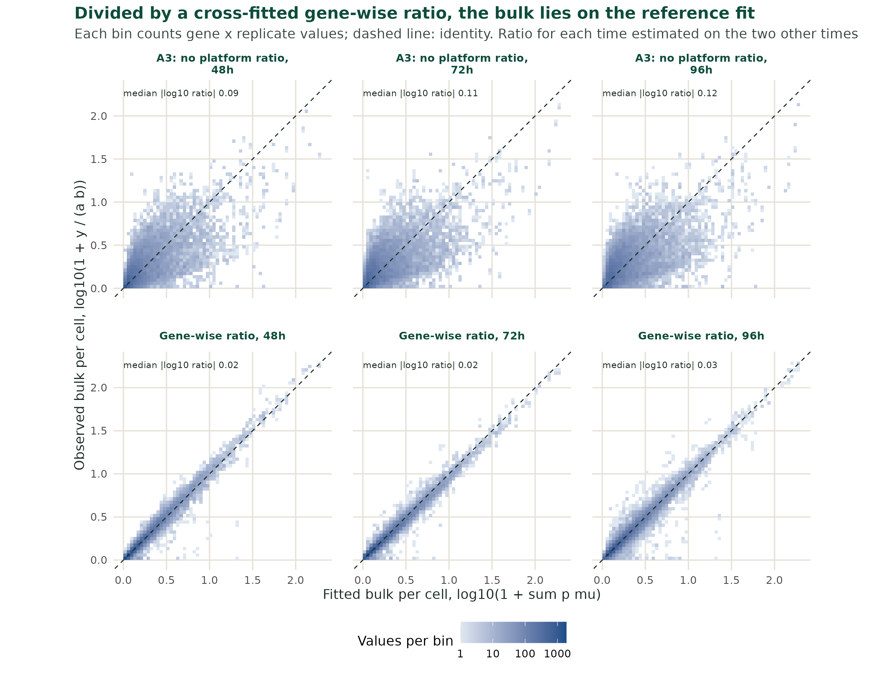
cross_platform.rds, element variants.
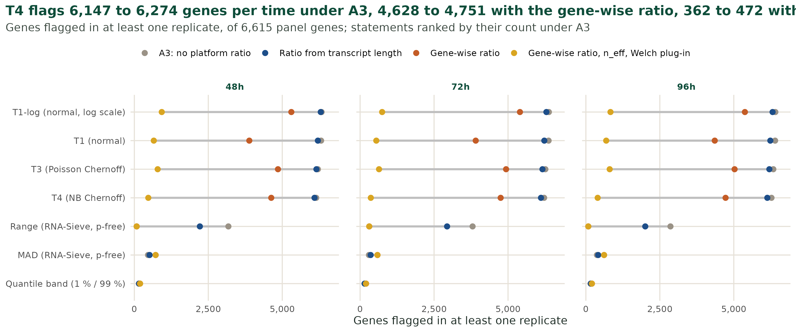
cross_platform.rds, element variants; a3_shift_summary.csv.
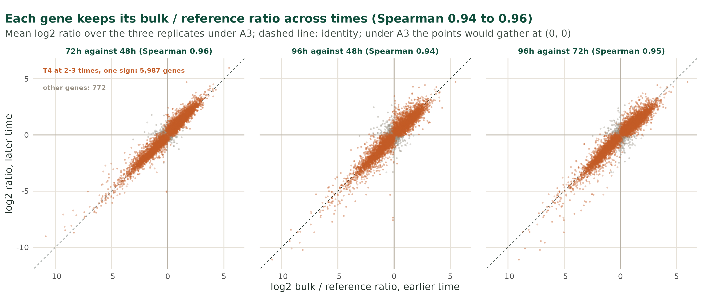
cross_platform.rds, elements log_ratio and drift.
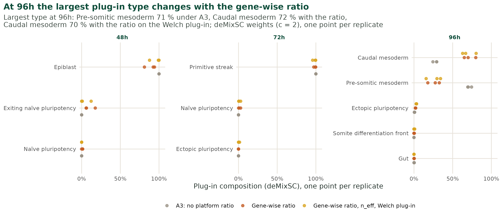
cross_platform.rds, element variants.
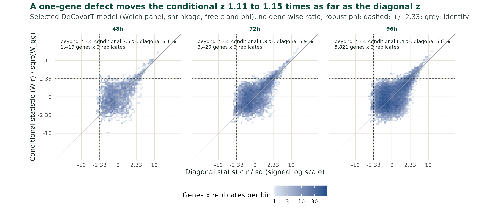
multivariate_consistency.rds, element gene; scripts/02_03_vis_cross_platform.R.
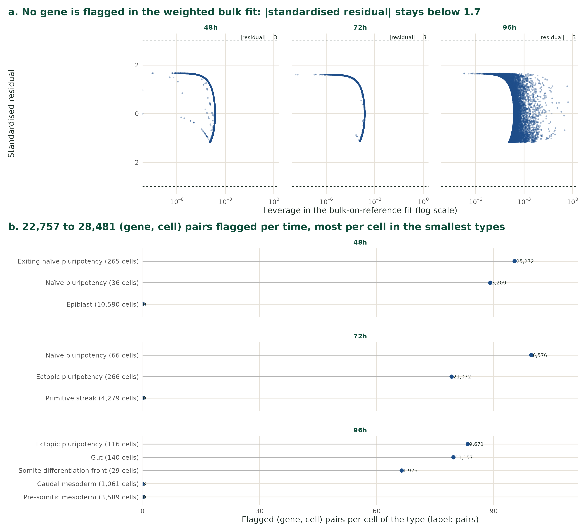
cross_platform.rds, elements outlier_genes and outlier_cells.
Outputs. At each time: the genes and modules flagged by each statement; their overlap (pairwise Jaccard indices and an UpSet-style table of membership patterns, tail_flag_overlap()); and the order of the statements from the most to the least conservative, read from the number of flags and the median thresholds, not assumed. Across times: the drift class of each gene (platform_drift.csv), and the settings of the run, including the smallest within-type correlation for an edge of the dependency graph (min_abs_cor = 0.1, settings.csv).
Show the code
# Not run. sc[[tm]]: raw counts (genes x cells) of the scored cells of
# slot tm, with labels cell_type[[tm]] and full library sizes lib[[tm]];
# bulk[[tm]]: the three standard-Wnt replicates at tm from GSE229386
# (raw counts, genes x samples), same gene identifiers; panel: genes
# selected by tier (ii) and the markers of tier (i).
# welch[[tm]]: Welch panel of slot tm; lambda_selected[[tm]]: shrinkage
# level chosen by the bulk likelihood (output/deconvolution/lambda_selection.csv).
source("R/02_00_utils.R")
source("R/02_01_stats_quality_control.R")
source("R/02_03_stats_tail_bounds.R")
# Step 1: p-free range check (RNA-Sieve range bound and MAD rule).
range_flags <- lapply(times, function(tm) {
x <- sc[[tm]][panel, , drop = FALSE]
ct <- droplevels(factor(cell_type[[tm]]))
norm <- sweep(as.matrix(x), 2L, sf[[tm]], "/")
mu <- sapply(levels(ct), function(k) rowMeans(norm[, ct == k, drop = FALSE]))
sd <- sapply(levels(ct), function(k) apply(norm[, ct == k, drop = FALSE], 1L, stats::sd))
out <- bulk_consistency_filter(
bulk = bulk[[tm]][panel, , drop = FALSE],
mu = mu,
sd = sd,
n_cells = table(ct)[levels(ct)],
z_range = 3,
mad_k = 3
)
out$gene[!out$keep]
})
# Step 2: tail statements per gene and per module, and the quantile band.
dict <- utils::read.csv(
"data/dictionaries/suppinger_celltype_markers.csv",
na.strings = c("", "NA")
)
map <- map_marker_symbols(unique(stats::na.omit(dict$gene_marker)), universe = rownames(sc[["48h"]]))
dict$gene <- map$mouse_symbol[match(dict$gene_marker, map$gene_marker)]
modules <- lapply(
split(dict$gene, dict$cell_type_excel),
function(g) unique(stats::na.omit(g))
)
tail_res <- lapply(times, function(tm) {
bulk_tail_filter(
bulk = bulk[[tm]][panel, , drop = FALSE],
counts = sc[[tm]][panel, , drop = FALSE],
cell_type = cell_type[[tm]],
modules = modules,
level = 0.01,
c_reg = 2,
max_degree = 10L,
mean_degree = 3,
min_abs_cor = 0.1
)
})
names(tail_res) <- times
overlap <- lapply(tail_res, function(r) tail_flag_overlap(r$gene, band = r$quantile_band))
# Step 3: drift of the discrepancy across the three matched times.
drift <- platform_drift_summary(lapply(tail_res, function(r) r$gene), statement = "T4")
# Step 4: does the bulk / reference ratio follow transcript length?
# ensembl[panel]: Ensembl ids of the panel genes (bulk row names).
log_ratio <- platform_log_ratio(tail_res)
lengths <- gene_transcript_length(panel, ensembl[panel])
log2_length <- setNames(log2(lengths$mean_tx_length), lengths$gene)
length_test <- platform_length_test(log_ratio$log_ratio, log2_length, seed = 20261109L)
# Step 5: cross-fitted platform ratio (each time from the two others),
# then the same statements on bulk / b. No gene is removed.
mu_list <- lapply(tail_res, function(r) r$moments$mu)
ratio_gene <- cross_fit_platform_ratio(bulk, mu_list, method = "gene", n_iter = 30L)
ratio_length <- cross_fit_platform_ratio(
bulk, mu_list, method = "length", log2_length = log2_length, n_iter = 30L
)
tail_gene <- lapply(times, function(tm) {
r <- ratio_gene[[tm]]
bulk_tail_filter(
bulk = bulk[[tm]][panel, , drop = FALSE],
counts = sc[[tm]][panel, , drop = FALSE],
cell_type = cell_type[[tm]],
modules = modules,
platform_ratio = setNames(exp(r$log_b), r$gene),
platform_var = setNames(r$var_log_b, r$gene)
)
})
# Step 6: same ratio, deMixSC plug-in fitted on the Welch panel only
# (welch[[tm]], output/grn/plugin/gene_sets.csv) and the bulk cell count
# a_i replaced by the effective count n_eff (estimate_effective_cells()).
tail_neff <- lapply(times, function(tm) {
r <- ratio_gene[[tm]]
bulk_tail_filter(
bulk = bulk[[tm]][panel, , drop = FALSE],
counts = sc[[tm]][panel, , drop = FALSE],
cell_type = cell_type[[tm]],
modules = modules,
platform_ratio = setNames(exp(r$log_b), r$gene),
platform_var = setNames(r$var_log_b, r$gene),
plugin_genes = welch[[tm]],
n_bulk = "moment"
)
})
n_eff <- lapply(tail_neff, function(r) r$plugin$scale) # a_hat, n_bulk
# Step 7: multivariate test under the selected DeCovarT model (Welch
# panel, shrinkage at the level chosen by the bulk likelihood, free c and
# phi), no gene-wise ratio (scripts/02_03_stats_multivariate_consistency.R).
source("R/03_01_stats_covariance_estimation.R")
source("R/04_01_stats_deconvolution.R")
mv <- lapply(times, function(tm) {
mom <- readRDS(sprintf("output/grn/plugin/moments_%s_welch.rds", tm))
sigma <- build_sigma(mom, "shrinkage", lambda = lambda_selected[[tm]])
y <- bulk[[tm]][mom$genes, , drop = FALSE]
fits <- lapply(colnames(y), function(s) {
fit_decovart_once(y[, s], mom$mu, sigma, "lbfgsb")
})
multivariate_tail_filter(
y, mom$mu, sigma,
p_hat = sapply(fits, function(f) f$p),
c_hat = sapply(fits, function(f) f$diagnostics$mean_scale),
phi_hat = sapply(fits, function(f) f$diagnostics$variance_scale),
modules = modules
)
})3.5 Tier (iv): down-weighting by the model
Tier (iv) is a remark, not a step of this chapter. Tiers (i) to (iii) keep or drop a gene; tier (iv) keeps every gene of the exported panel and lets the model weight it, so that genes with a large or poorly estimated within-type covariance count less in the generalised least squares of DeCovarT. That weighting happens only when DeCovarT itself is fitted on the panel of 3, with the covariances estimated in 1, in the deconvolution of Section 5.1. No gene is selected and no code runs here. Why weighting can replace a hard filter is in 3.1, down-weighting.
3.6 Panel export
The covariance scripts of 1 read the counts of output/feature_selection/tier_01/scored_slots.rds restricted, at each time, to the genes of output/feature_selection/tier_02/selected_<time>.csv: the gated panel of tier (ii), 1,360, 3,617 and 5,893 genes at 48, 72 and 96 h, with full library sizes. The legacy export (the 500 genes of the type-equal ratio, type-equal ratio, in data/intermediate/equal_type_top500_by_time.rds) is no longer read.
The new rank table will have one row per gene and time, with the columns of Table 3.6.
| Block | Columns | Source |
|---|---|---|
| Identifiers | time_point, gene |
slot |
| Tier (i) gene rules | fractional_share, in_sct_layer, shared_with_bulk |
fractional_count_share(), gene_filter_rules() |
| Presence gate | n_detected, min_type_cells, weakest_type, pass_presence |
presence_gate() |
| Fits and effect size | overdispersion, deviance_m0, deviance_m1, deviance_r2 |
compare_type_effect_tests() |
| Four tests | <test>_stat, <test>_pval, <test>_padj, <test>_pass for lr, anova_vst, ql_f, welch_perm |
same |
| Gate and rank | gate_test, adj_pval, pass_fdr, rank, selected |
rank_genes_omnibus() |
| Tier (i) markers | in_marker_panel, in_union |
signalling dictionary |
| Tier (iii) outliers | largest cell Cook’s distance, number of flagged cells, gene Cook flag per replicate | cook_cells(), cook_genes() |
| Tier (iii) bulk flags | range flag; one flag per statement (T1, T1-log, T3, T4, quantile band), any replicate, under A3 and with the cross-fitted gene-wise ratio; module flags; drift class across times; mean transcript length; \log_2\hat b_g and its standard error | bulk_consistency_filter(), bulk_tail_filter(), platform_drift_summary(), gene_transcript_length(), cross_fit_platform_ratio() |
3.7 Perspectives
3.7.1 Cell-line sensitivity at 48 h
The reference has one specimen per slot, so cross-sample consistency (3.1, cross-sample) cannot be tested. The closest available analogue is the two cell lines at 48 h, the only slot that contains both. It is not part of the main results. The script output/naive_marker_selection/cell_line_48h/01_03_sensitivity_48h_cell_line.R refits the legacy v2 model inside B-S and inside SBR and compares the equal-cell top 500 and the per-type top 50. (It lives under output/ next to its results; scripts/01_03_export_equal_type_seurat.R is a different script.)
- The two global lists share 308 of 500 genes (Jaccard 0.45).
- Epiblast shares 29, and exiting naïve pluripotency 30, of its top 50.
- Naïve pluripotency is scored in SBR only: B-S has fewer than 20 cells of that type.
Outputs: overlap_48h_cell_line.csv, ranks_global_48h_by_line.csv, ranks_per_cell_type_48h_by_line.csv, venn_48h_cell_line.pdf.
3.7.2 Comparison with classifier-based marker selection
Seven classifiers of the cell type select genes on their own, and their stable sets are set against the two-stage panel: genes confirmed by the two-sided contrast A2 (Section 3.11) with |\log_2\mathrm{FC}|\ge 1. The comparison is qualitative: it asks which genes a predictive criterion keeps that the tests do not, and the reverse. The reasons for each method and for what is not done (time splines, MINT) are in the vignette (3.1, classifier choices).
Design. Each time point is analysed on its own. Outer 5-fold cross-validation, stratified by type, estimates the held-out metrics; an inner 3-fold split of the outer training cells tunes each method. Classes are weighted by n_c^{-1/2}. A gene is stable for a type when it is selected in at least 3 of the 5 outer fits. The cells come from one specimen, so the metrics measure generalisation to new cells of this specimen (Note 3.1).
msgl was stopped at 48 h: even on 2,000 HVGs one 48 h fold took 38.6 h and the other 14 were unfinished after 42.6 h (msgl_runtime.csv); it is reported at 72 and 96 h only.
| Method | Fit | Genes offered | Gene set per type |
|---|---|---|---|
glmnet |
ungrouped multinomial elastic net, \alpha\in\{0.1,\dots,1\} (Friedman et al. 2026) | gated panel | non-zero coefficients |
msgl |
sparse-group lasso on 50 co-expression modules (Vincent 2019) | 2,000 HVGs | non-zero coefficients |
| PLN-LDA | Poisson log-normal LDA on raw counts, offset \log library size, diagonal covariance (Chiquet et al. 2025) | 2,000 HVGs | top 50 by correlation with the axes |
| random forest | ranger through parsnip, 500 trees, class weights n_c^{-1/2} (Wright 2026; Kuhn and Vaughan 2026) |
gated panel | top 50 by permutation importance |
| balanced random forest | as above, but each tree bootstraps the same number of cells (the size of the rarest type) from every type, no class weights TODO-cite: Chen, Liaw & Breiman 2004, Using random forest to learn imbalanced data, Tech. Rep. 666, Dept. Statistics, UC Berkeley; page to check | gated panel | top 50 by permutation importance |
| XGBoost | boosted trees through parsnip (Chen et al. 2026; Kuhn 2026) |
2,000 HVGs | top 50 by gain |
| sPLS-DA | mixOmics::splsda(), keepX tuned (Le Cao et al. 2026) |
gated panel | selected loadings |
Prediction. At 72 and 96 h the penalised logistic models and XGBoost reach a macro-F1 of 0.78–0.91 (Figure 3.22): glmnet 0.89 and 0.86, XGBoost 0.91 and 0.78. At 48 h every method does worse, because naïve pluripotency has 36 cells and exiting naïve pluripotency 265 against about 8,400 epiblast cells. Accuracy stays above 0.9 everywhere and says little here: predicting epiblast for every 48 h cell already gives 0.97. Random forest with class weights does exactly that at 48 h (macro-F1 0.33, recall 0 for both minority types, Figure 3.44), and sPLS-DA nearly so (0.39). The balanced random forest, which draws as many cells of each type for every tree, removes the collapse: macro-F1 0.71, 0.89 and 0.77 at 48, 72 and 96 h against 0.33, 0.61 and 0.75, the best macro-F1 of all methods at 48 h. The somite differentiation front at 96 h (29 cells), missed by the weighted forest, reaches a recall of 0.74. PLN-LDA has the best balanced accuracy (0.82 at 48 h, 0.95 at 72 h) but the worst accuracy and log loss: it trades majority-class errors for minority recall, and its posteriors are overconfident (Figure 3.45).
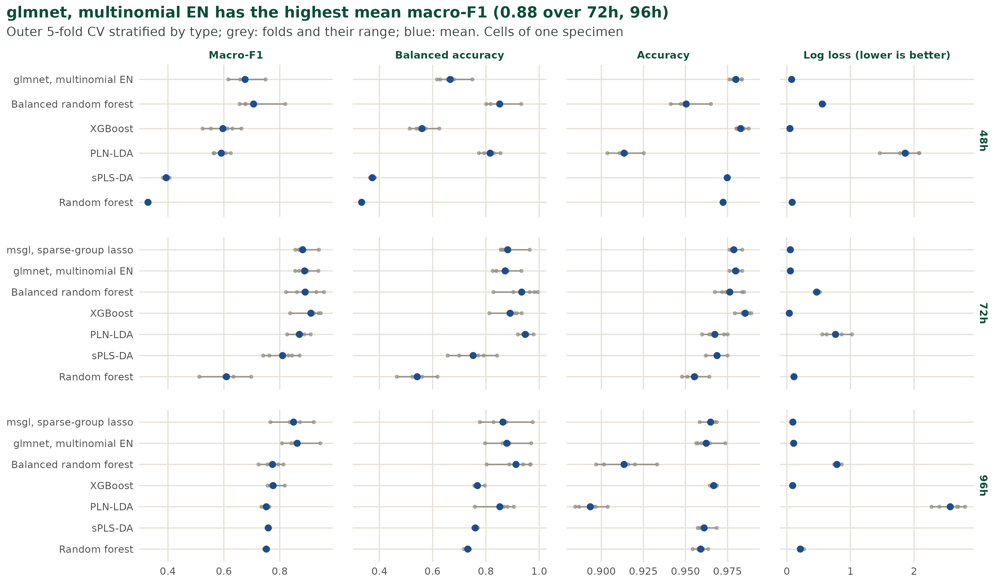
msgl has no 48 h fit. sPLS-DA has no log loss (no class probabilities). Source: fs_clf_metrics.rds.
Overlap with the two-stage panel. The tree methods keep few genes and most of them are already in the two-stage panel: 81 % of the 134 XGBoost type × gene pairs, 78 % of the 144 random-forest pairs and 86 % of the 139 balanced random-forest pairs. sPLS-DA follows (63 % of 772). The penalised logistic models select more genes and overlap less: glmnet 37 % of 651, msgl 27 % of 2002. PLN-LDA overlaps least (18 % of 118; see below). A predictive model needs one gene from each block of correlated genes, while the tests confirm every gene of the block, so most of the two-stage panel is found by no classifier (Figure 3.23 and the UpSet plots below).
Why PLN-LDA picks other genes. At 48 and 72 h none of the stable PLN-LDA genes passes the omnibus gate, and they are almost never detected: about 0.01 counts per cell on average, against 0.9–2.9 for the XGBoost genes drawn from the same 2,000 HVGs (Table 3.8). Their large fold changes come from a few counts that happen to fall in a small type. PLN-LDA ranks genes by the correlation of their latent positions with the discriminant axes (corr_map). For a gene that is nearly always zero, the latent position is set by the prior and the offset, and a handful of counts in one type is enough to align it with an axis; the shared diagonal covariance then gives it a small latent variance and a large weight. The linear boundary (LDA rather than QDA) affects the posteriors, which are overconfident, more than the ranking of genes. The permuted Welch gate rejects these genes because they carry almost no signal. A floor on the mean count within the training fold would remove them; it was not run.
Show the code
pln_tab <- do.call(rbind, lapply(times, function(tm) {
ctr <- read_out("feature_selection", "deg_twosided", paste0("contrasts_twosided_", tm, ".csv"))
ctr <- ctr[ctr$test == "welch_perm", ]
hv <- read_out("feature_selection", "classifiers", paste0("hvg_", tm, ".csv"))
do.call(rbind, lapply(c("plnlda", "xgboost"), function(m) {
x <- clf_sets[clf_sets$method == m & clf_sets$time_point == tm, ]
cc <- ctr[match(paste(x$type, x$gene), paste(ctr$type, ctr$gene)), ]
data.frame(
Time = tm,
Method = if (m == "plnlda") "PLN-LDA" else "XGBoost",
`Stable pairs` = nrow(x),
`Pass the gate` = sprintf("%.0f %%", 100 * mean(x$gene %in% ctr$gene[ctr$screened])),
`Median mean count` = signif(stats::median(hv$mean[match(x$gene, hv$gene)]), 2),
`Median |log2FC|` = round(stats::median(abs(cc$log2fc), na.rm = TRUE), 1),
check.names = FALSE
)
}))
}))
tinytable::tt(pln_tab)| Time | Method | Stable pairs | Pass the gate | Median mean count | Median |log2FC| |
|---|---|---|---|---|---|
| 48h | PLN-LDA | 44 | 0 % | 0.0078 | 3.1 |
| 48h | XGBoost | 44 | 89 % | 1.4000 | 1.8 |
| 72h | PLN-LDA | 34 | 0 % | 0.0086 | 3.1 |
| 72h | XGBoost | 47 | 89 % | 0.9000 | 2.4 |
| 96h | PLN-LDA | 40 | 82 % | 0.3400 | 2.5 |
| 96h | XGBoost | 43 | 100 % | 2.8000 | 3.2 |
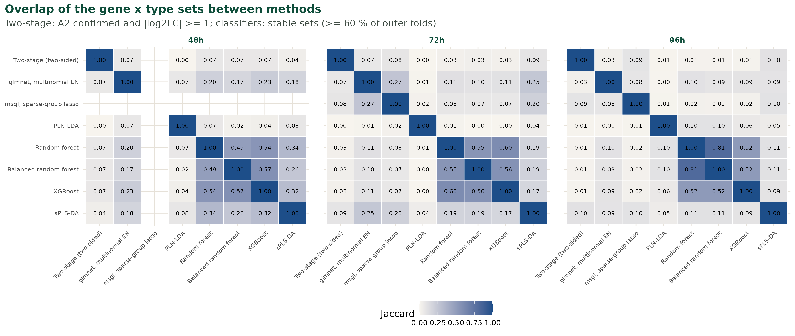
fs_clf_jaccard.rds.
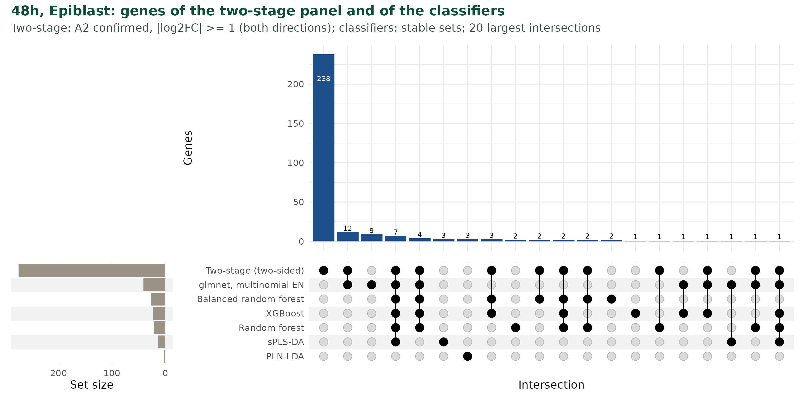
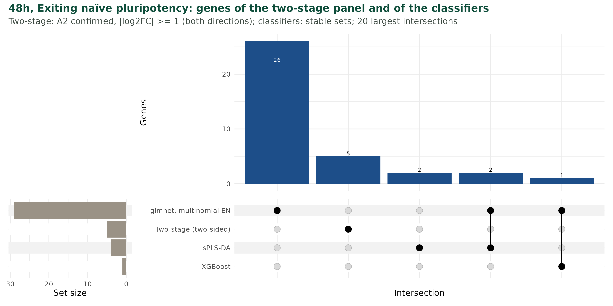
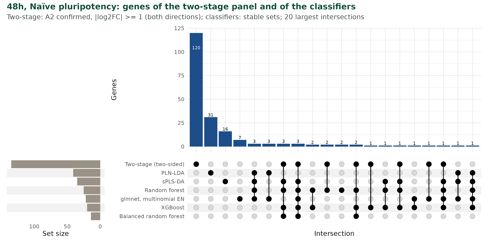
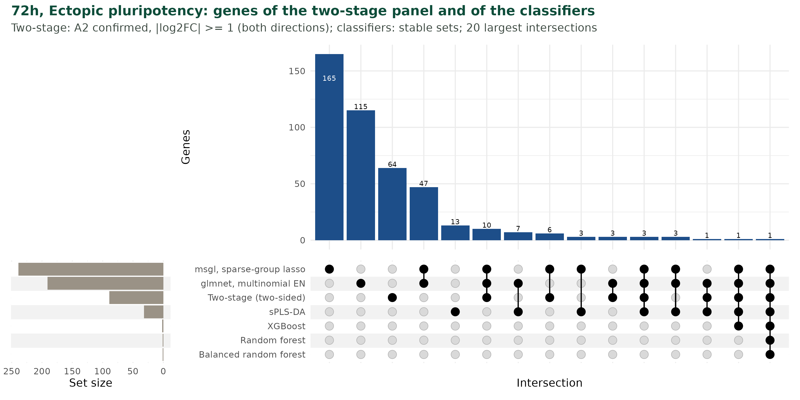
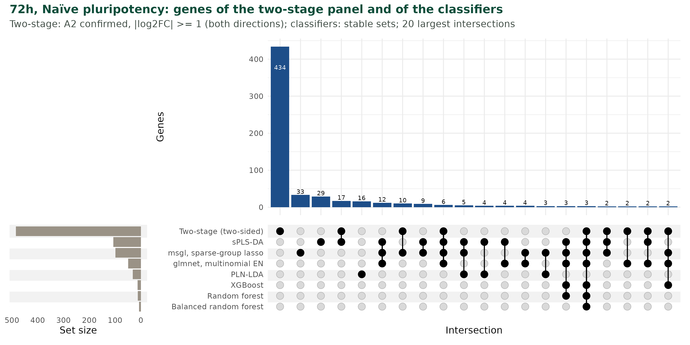
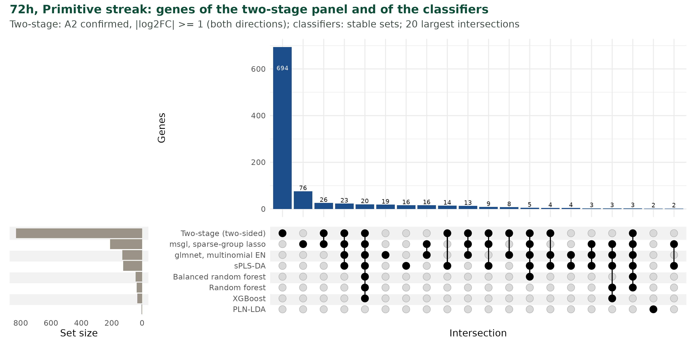
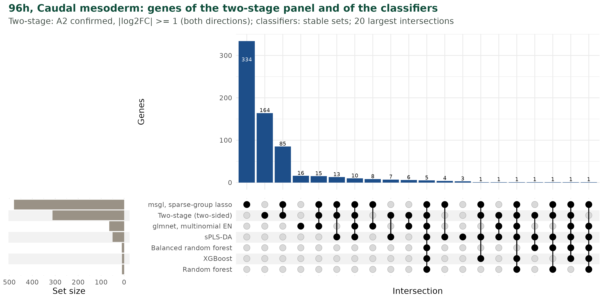
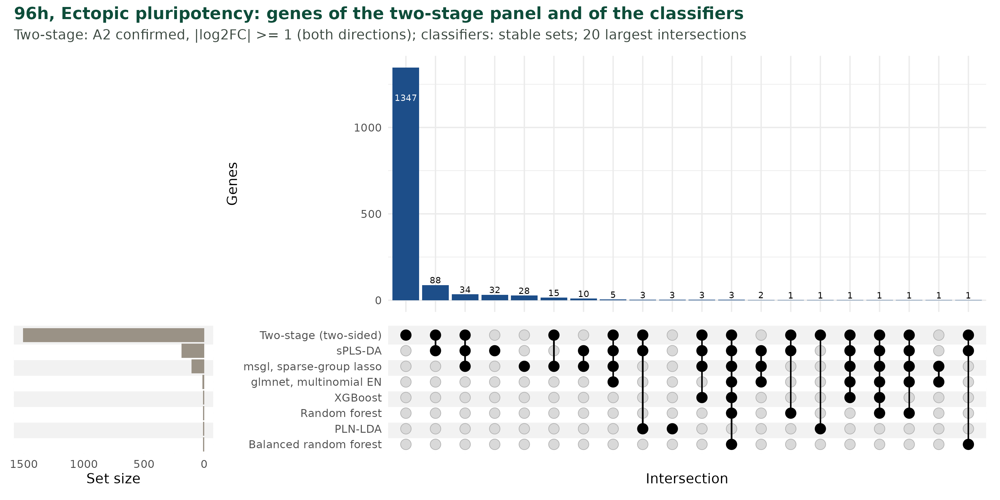
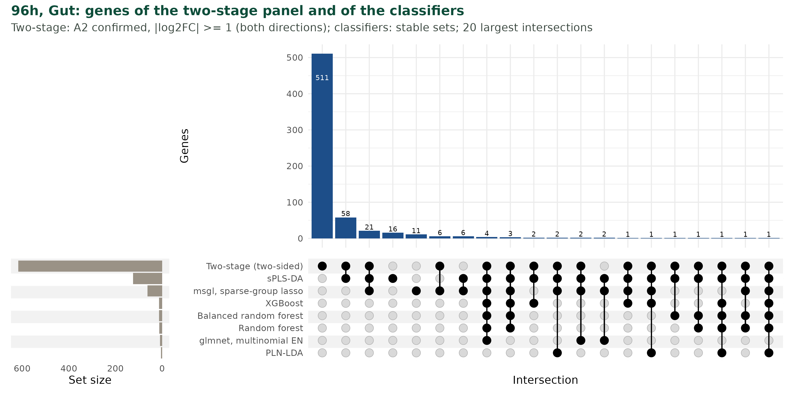
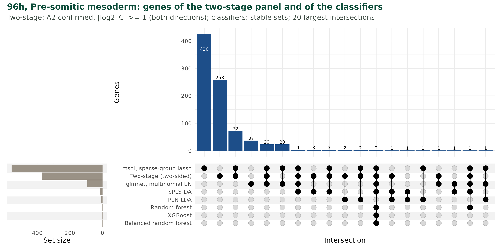
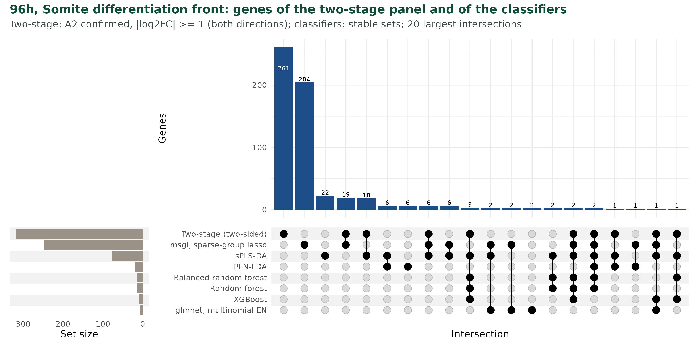
UpSet plots: genes of the two-stage panel and of the classifier stable sets, one tab per type × time (20 largest intersections). Source: fs_clf_upset_<time>_<type>.rds.
48 h sensitivities. The cell line is ignored in the primary fits. Two corrections are compared at 48 h: the cell line as an unpenalised covariate (glmnet, PLN-LDA) or as a predictor (trees, sPLS-DA), and ComBat-seq on the counts without the labels (Leek et al. 2026). The covariate raises the glmnet macro-F1 from 0.68 to 0.74 and XGBoost from 0.60 to 0.66; ComBat-seq moves every macro-F1 by less than 0.07, upwards only for PLN-LDA (Figure 3.24). The stable sets of glmnet and XGBoost stay close to their primary sets (median Jaccard 0.62–0.74 across types); sPLS-DA under ComBat-seq and PLN-LDA with the covariate share almost no stable genes with their primary sets (jaccard_sensitivity_48h.csv), so their 48 h selections depend on the cell line.
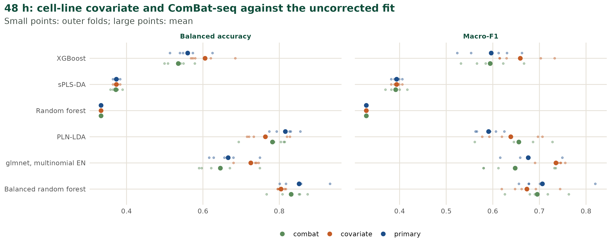
fs_clf_sensitivity_48h.rds.
Diagnostics of each model are in Section 3.12.
3.7.3 Optional multivariate refinement
A univariate rank ignores redundancy between genes and the covariances DeCovarT models. The optional stage searches subsets of the panel with a multi-objective criterion on all types jointly (3.1, covariance-driven (post hoc) selection). It needs \widehat{\boldsymbol{\Sigma}}_{j}, so it runs after 1, and it is drawn dashed in Figure 1. Its panels fall under the circularity warning of the vignette (3.1, circularity): a comparison with other methods also reports the panel of 3, chosen without the model.
Shortlist. The multi-donor pipeline of the screening appendix (S6, multi-donor pipeline) feeds NSGA-II with a DESeq2 pseudo-bulk shortlist. With one specimen, as for the Suppinger reference, the DESeq2 step does not apply, and strategy B of that appendix (presence gate, omnibus gate, effect-size rank; Section 3.2.3 and Section 3.3.2) replaces the shortlist.
Types with few cells. A joint test or objective on the panel \mathcal{G} uses the within-type covariance, which is high-dimensional when C_j is not much larger than |\mathcal{G}| (3.1, multivariate tests). With the gated panel of 3 (1,360, 3,617 and 5,893 genes at 48, 72 and 96 h), nine of the eleven scored type × time cells of Table 3.2 have C_j<|\mathcal{G}|, so their sample covariance is singular (Table 4.2):
- 48 h: exiting naïve pluripotency (265 cells), naïve pluripotency (36);
- 72 h: ectopic pluripotency (266), naïve pluripotency (66);
- 96 h: pre-somitic mesoderm (3,589), caudal mesoderm (1,061), gut (140), ectopic pluripotency (116), somite differentiation front (29).
Only 48 h epiblast and 72 h primitive streak have more cells than genes. For these types the objectives below use the regularised \widehat{\boldsymbol{\Sigma}}_{j} of 1, never the sample covariance.
Planned settings:
- Optimiser. NSGA-II through
mco::nsga2()(Mersmann et al. 2020). Genes are encoded as a mask in [0,1]^{G}, thresholded to a target panel size. - Objectives, all minimised:
- the 2-norm condition number \kappa_{2}(\widehat{\boldsymbol{\mu}}_{\mathcal{G}}) of the mean signature restricted to the panel;
- the mean pairwise
MixSimoverlap of the J Gaussians \mathcal{N}(\widehat{\boldsymbol{\mu}}_{\cdot j},\widehat{\boldsymbol{\Sigma}}_{j}) (Melnykov et al. 2012, 2021); - optionally, minus the smallest eigenvalue of the Fisher information for \boldsymbol{p}, as a sensitivity objective on a shortlist of non-dominated panels.
- Output. The whole Pareto front, not one panel. With one specimen, any panel chosen here is fitted on this atlas and has to be challenged on an external gastruloid cohort.
scripts/04_02_feature_selection_genetic_algorithm.R is a template: it stops with an error until the fitness function is implemented on a real panel.
Show the code
# Not run. mu: G x J means; Sigma: list of J covariances (G x G), both
# on the linear scale, from the estimator selected in the covariance
# chapter.
fitness <- function(mask) {
g <- which(mask > 0.5)
kappa2 <- kappa(mu[g, , drop = FALSE], exact = TRUE)
ov <- MixSim::overlap(
Pi = rep(1 / J, J),
Mu = t(mu[g, , drop = FALSE]),
S = simplify2array(lapply(Sigma, \(A) A[g, g, drop = FALSE]))
)
c(kappa2, mean(ov$OmegaMap[upper.tri(ov$OmegaMap)]))
}
front <- mco::nsga2(fitness, idim = nrow(mu), odim = 2L,
lower.bounds = rep(0, nrow(mu)), upper.bounds = rep(1, nrow(mu)))Legacy panel: SCTransform ratio
The current 500-gene panel, and every covariance output of 1, come from the rank described here. It stays the source of data/intermediate/equal_type_top500_by_time.rds until the rank of tiers (ii) and (iii) has been run; it is kept as provenance of the existing files.
SCTransform v2 fit per time
rank_genes_sctransform() refits Seurat::SCTransform() separately at 48 h, 72 h and 96 h (split_by = "time_point") on the allow-list genes. Cells of every non-artefact type at that time are fitted together. The fitted mean is an intercept plus a library-size offset,
\log\mu_{gc} = \beta_{0g} + \log s_{c}, \qquad x_{gc}\sim\mathrm{NB}(\mu_{gc},\psi_{g}), \tag{3.5}
with s_{c} the full RNA library size of cell c (column sum of the unfiltered count matrix, stored as log_umi =\log_{10}s_{c}), not the sum over the allow-list. The Pearson residual is r_{gc}=(x_{gc}-\hat\mu_{gc})/\sqrt{\hat\mu_{gc}+\hat\mu_{gc}^{2}/\hat\psi_{g}}.
SCTransform settings as run (model_card.csv, scripts/archives/sctransform_panel/02_90_stats_rank_sctransform.R).
| Setting | Value |
|---|---|
vst.flavor |
"v2" (depth slope fixed at \ln 10 on \log_{10}s_c, i.e. an offset) |
method |
"glmGamPoi"; fitter recorded as glmGamPoi_offset |
vars.to.regress |
none |
| Cell type, cell line in the fit | no, no |
ncells |
all retained cells of the slot (10,891 at 48 h, 4,619 at 72 h, 4,935 at 96 h) |
residual.features |
all allow-list genes; return.only.var.genes = FALSE |
do.correct.umi, do.scale, do.center |
FALSE, FALSE, TRUE |
seed.use |
1 |
| Residual clip | \pm\sqrt{n/30}: \pm 19.05 (48 h), \pm 12.41 (72 h), \pm 12.83 (96 h) |
Cell type is left out of the fit on purpose. The count models of Section 3.3.1 fit the type effect directly, without regularising the overdispersion and without the clip.
Between/within ratio rank
The residual matrix of one slot is split by type. With C_j cells of type j, \bar r_{gj} the mean residual of gene g in type j, and v_{gj} its within-type variance, the two decompositions are
\mathrm{SS}_{\mathrm{between},g} = \sum_{j=1}^{J}C_{j}\bigl(\bar r_{gj}-\bar r_{g}\bigr)^{2}, \qquad \mathrm{SS}_{\mathrm{within},g} = \sum_{j=1}^{J}\sum_{c\in j}\bigl(r_{gc}-\bar r_{gj}\bigr)^{2} \tag{3.6}
(every cell has weight one), and
\bar r_{g}^{\mathrm{eq}} = J^{-1}\sum_{j=1}^{J}\bar r_{gj}, \qquad \mathrm{MS}_{\mathrm{between},g} = J^{-1}\sum_{j=1}^{J}(\bar r_{gj}-\bar r_{g}^{\mathrm{eq}})^{2}, \qquad \mathrm{MS}_{\mathrm{within},g} = J^{-1}\sum_{j=1}^{J}v_{gj} \tag{3.7}
(every type has weight 1/J). The score is the ratio of the between term to the within term.
Two global lists are built per slot (anova_ss(), anova_ms_equal_type(), rank_ratio()):
- Global, equal cell weight. Top
n_genes_global = 500genes by \mathrm{SS}_{\mathrm{between}}/\mathrm{SS}_{\mathrm{within}} (ranks_global.csv). The largest type dominates. - Global, equal type weight. Top 500 by \mathrm{MS}_{\mathrm{between}}/\mathrm{MS}_{\mathrm{within}} (
ranks_global_equal_type.csv). This list feeds the export of
Each list is then united with the signalling markers of the types scored in that slot (Section 3.2.2). At 48 h the leading equal-cell ratios land on naïve-pluripotency markers; at 96 h the top gene is the endoderm marker Sox17. The residual clip changes only the far tail of these ratios.
3.8 Projections of tier (i)
The projections of Figure 3.6, with UMAP added and repeated on the authors’ SCT residuals (the scale.data layer of the SCT assay, 2,944 genes), as in the exploration of Suppinger et al. (2023) (Fig. 1B, S2A). Each input is centred, not scaled; UMAP (uwot) runs on its first 30 principal components with 30 neighbours and a fixed seed, and is a nonlinear map: distances and areas on its axes are not the original distances. The sPLS-DA keeps 200 genes per component.
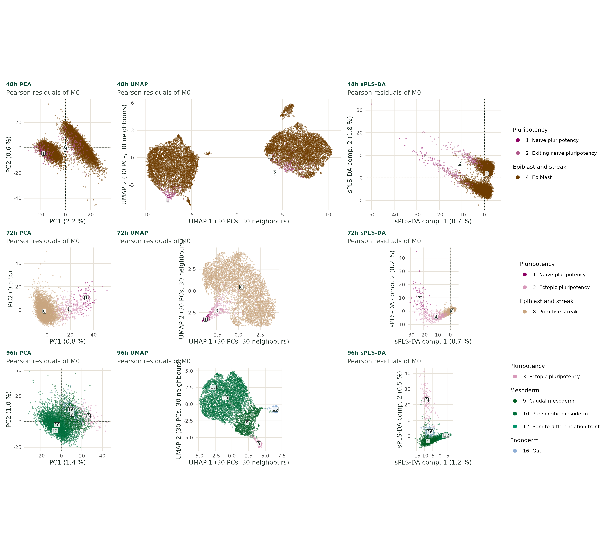
fs_tier1_projections_pearson.rds.
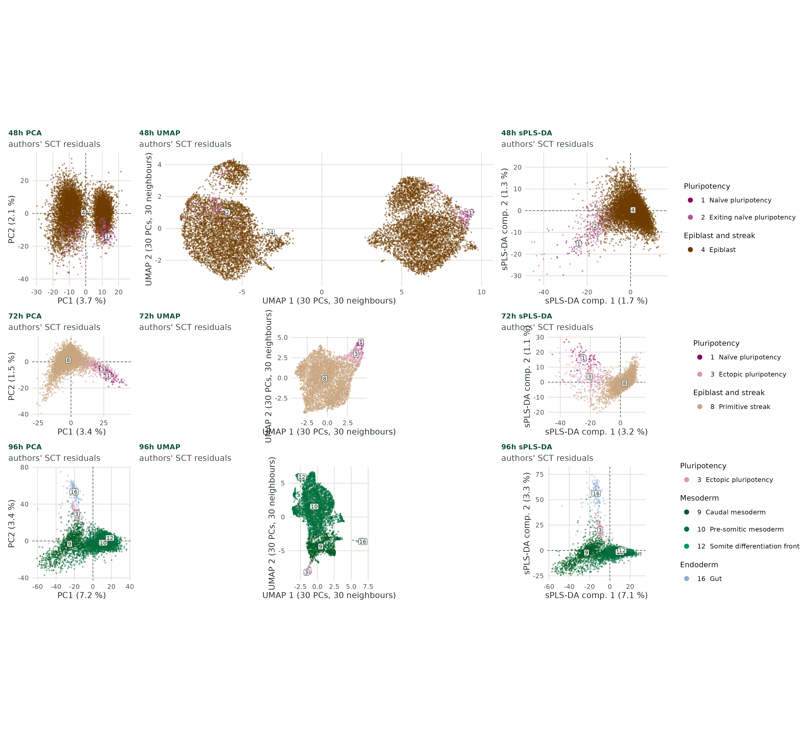
SCT residuals. Data: fs_tier1_projections_sct.rds.
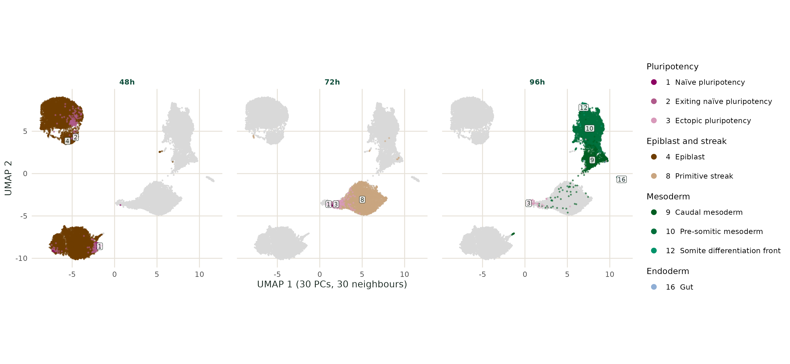
SCT residuals, drawn once per time: cells of that time coloured by type, with each type’s number at its median, the others in grey (as in Fig. S2A of Suppinger et al. (2023)). Data: fs_tier1_umap_pooled.rds.
3.9 Code of tier (i)
Functions are in R/02_01_stats_quality_control.R (statistics), R/02_01_vis_quality_control.R (figures) and R/02_00_utils.R (shared). scripts/02_01_stats_quality_control.R writes output/feature_selection/tier_01/ (cell_counts.csv, author_qc_audit.csv, gene_filter_summary.csv and scored_slots.rds, tracked with DVC: dvc pull output/feature_selection/tier_01/scored_slots.rds.dvc); scripts/02_01_vis_quality_control.R draws the figures, each with the .rds of its data in output/feature_selection/tier_01/figures/.
| Function or script | Purpose | Supports |
|---|---|---|
keep_bulk_matched_cells() |
cells at 48, 72 or 96 h, with a label and a positive library size | Section 3.2.1 |
scored_types() |
types allowed by the dictionary with at least min_cells cells in the slot |
Table 3.2 |
read_bulk_htseq(), shared_bulk_single_cell_genes() |
bulk table; symbols shared one-to-one with the bulk | Table 3.1 |
drop_mitochondrial_genes(), cell_mitochondrial_fraction() |
guards: no mt- symbol is deposited, so they remove nothing and return NA |
Table 3.1 |
fractional_count_share(), fractional_by_group() |
share of fractional non-zero entries per gene, over all cells and per type and time | Figure 3.3 |
gene_biotypes() |
org.Mm.eg.db gene type of each symbol |
Figure 3.3 |
cell_qc_rules() |
record of the cell rules not applied (library-size MADs, deMixSC cut-offs) | Table 3.1 |
presence_gate(), gene_filter_rules() |
presence gate (Equation 3.1): min_cells_total = 20, min_cells_type = 2 |
Section 3.2.3 |
prepare_scored_counts() |
slots of scored cells and kept genes; max_fractional_share = 1 keeps every gene |
Section 3.2.1 |
map_marker_symbols() |
offline mapping of the curated markers to mouse symbols (org.Mm.eg.db) |
Section 3.2.2 |
pearson_residuals_m0(), projection_input() |
analysis scale of the projections (Pearson residuals of M_0, shifted log, SCT residuals) |
Section 3.2.3 |
project_slot(), plot_type_pca_plsda(), plot_pooled_umap() |
PCA, UMAP and sPLS-DA (keepX = 200) |
Figure 3.6, Section 3.8 |
celltype_colours(), celltype_lineages(), celltype_scale() |
nested lineage colours and grouped legend (data/dictionaries/suppinger_celltype_colours.csv) |
all figures |
save_figure() |
PDF, PNG and the .rds of the figure’s data |
all figures |
3.10 Which type drives each gene: one-sided superiority
The gate says that a gene varies across the types of a slot, not which type carries the difference. This appendix tests, for every gene and scored type, two one-sided hypotheses: A, the type is above the equal-weighted geometric mean of the other types, and B, it is above every other type (B implies A). Hypotheses, error rate, the graphical within-gene procedure and the strategies dropped are in 3.1, post hoc inference. Cell line is not a covariate, and the cells of one specimen are not biological replicates (Note 3.1): the results describe these cells.
Settings. Each omnibus test of Table 3.3 screens the genes of a slot at BH 0.05, and its own post hoc family confirms them at the stage-wise level \alpha_I=0.05\,R/G, that is 0.0071 / 0.0168 / 0.0302 for the permuted Welch G at 48, 72 and 96 h. The four families are: Wald z on the NB coefficients of M_1 (cell-means design; emmeans gives the same p-values to 10^{-15}, checks.csv); the quasi-likelihood F contrast of glmGamPoi::test_de(); t on the shifted log with the pooled variance; and Welch t on the Pearson residuals of M_0, referred to the B=2,000 within-batch permutations of the gate (the same draw: the gate p-values are reproduced exactly). The permuted Welch family is primary, because it is the only one calibrated at 48 h (Figure 3.7). Within a gene the graph of 3.1 tests each A_j at weight 1/J and passes it to B_j; Holm on A alone (with stageR’s multipliers J-1,J-1,\ldots,1; agreement with stageR::stageWiseAdjustment() is 1 at every time) and one BH over all gene \times type pairs are reported beside it.
Results. With the primary family, 9,144 gene \times type pairs are confirmed above the average of the other types and 2,513 above every type (Figure 3.28); one BH over all pairs would confirm 10,250. The four families agree on which types carry most genes (Figure 3.29): primitive streak at 72 h has the most, exiting naïve pluripotency at 48 h the fewest. Unique superiority is rare where two types are close: at 96 h pre-somitic and caudal mesoderm have 1,451 and 1,247 genes above the average of the other types, but only 23 and 110 above every type. Most enriched genes belong to one type and time (Figure 3.30). The one-versus-average fold changes are unimodal across genes, centred near 0 with a long right tail (Figure 3.31).
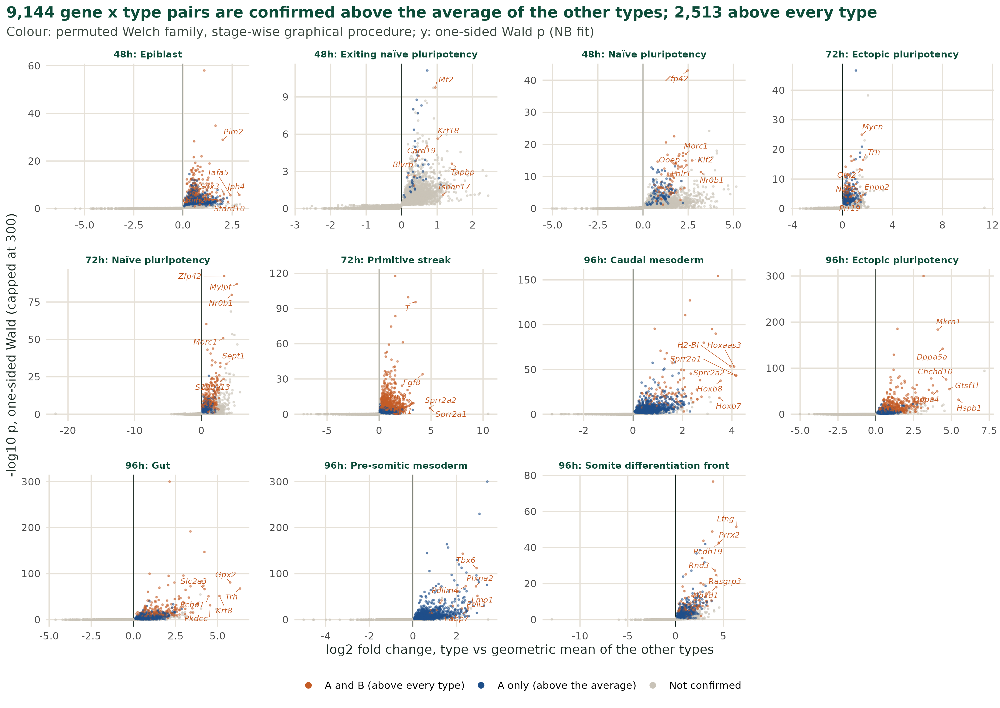
deg.rds.
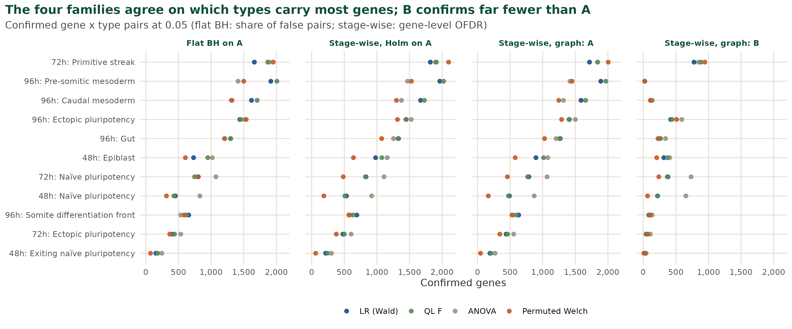
deg_counts.csv.
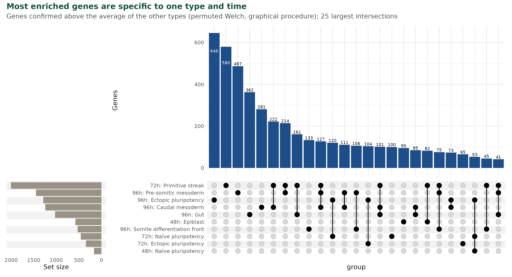
fs_deg_superiority_upset.rds.
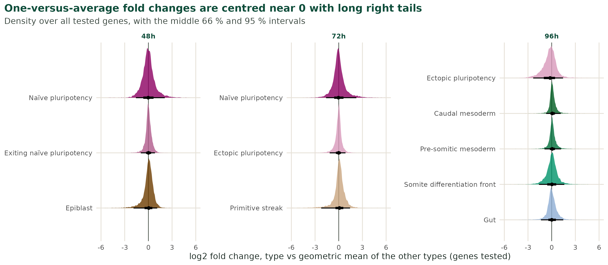
deg.rds.
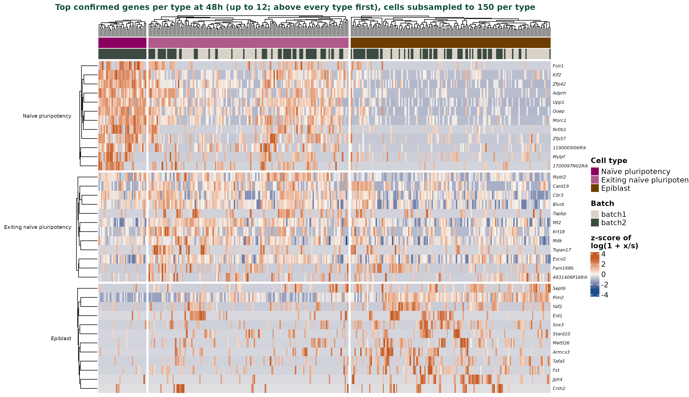
fs_deg_superiority_heatmap.rds.
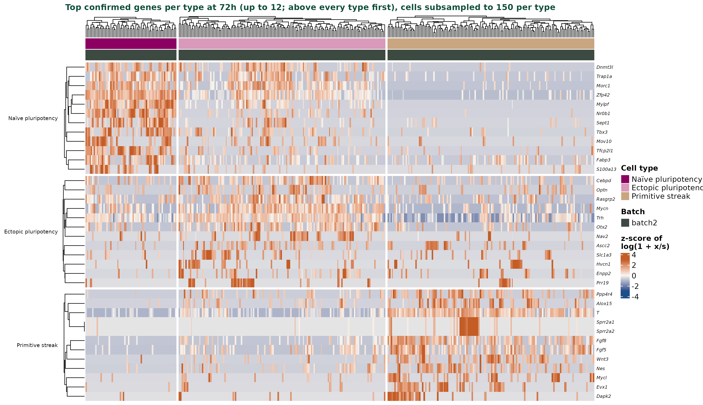
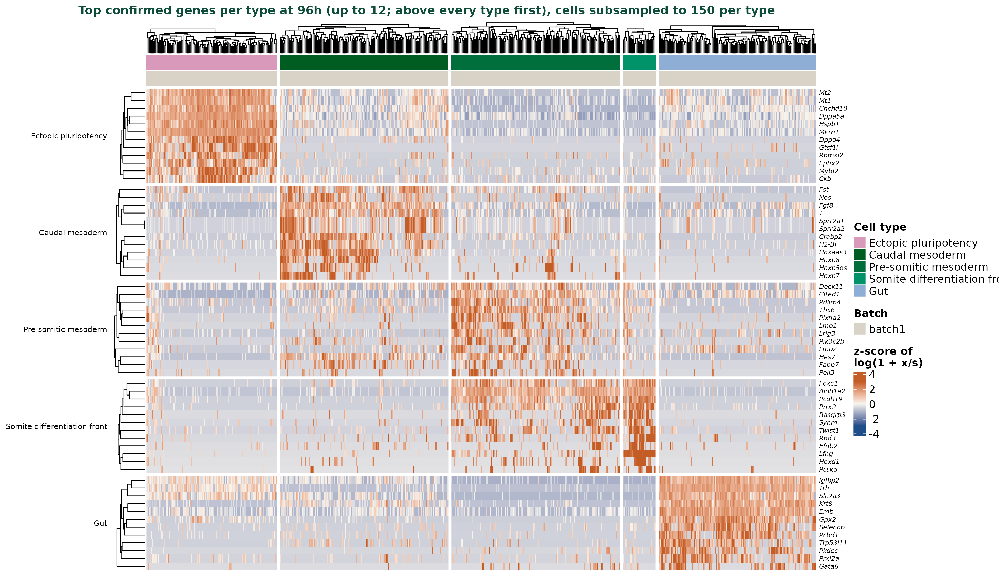
Sub-states within a type. A type made of two promoter-activity states would show, for its genes, a negative-binomial mixture: an off-state with more zeros than one NB predicts, or two expressed modes; this is how CardamomOT defines basins, and a DeCovarT component would then need to be split into sub-types TODO-cite: CardamomOT, mechanistic gene regulatory network and trajectory inference, Eq. beta_mixture; preprint, citation key to add. Among the 2,513 genes above every type, 1 have a share of zero cells more than 10 points above the share the fitted NB (type mean, \hat\phi_g, size factors) predicts, and 1 have two modes among their non-zero cells (bimodality coefficient above 5/9 and dip test p<0.05) (Figure 3.35). Within-type multimodality is therefore rare at the resolution of these tests; the descriptive checks are not a test of basins.
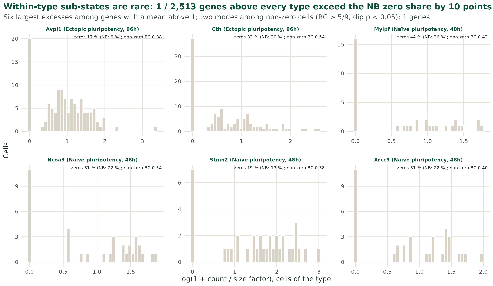
bimodality.csv.
Old against new panel. The archived panel of the legacy SCTransform ratio kept the top 500 genes per time; 311 / 420 / 310 of them pass the new gate at 48, 72 and 96 h, and their ranks agree moderately (Spearman 0.54 to 0.67 on the shared genes) (Figure 3.36). The new panel is larger because it has no cap.
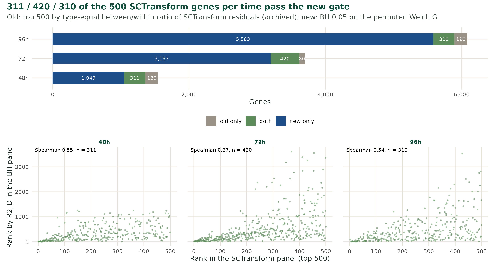
3b71ae0^) against new (BH 0.05 on the permuted Welch G) panel. Top: genes in the old panel only, in both, in the new panel only. Bottom: rank in the old panel against the R^{2}_{D} rank in the new panel for the shared genes, Spearman correlation per time. Source: panel_comparison.csv.
TODO-future: group knockoffs on gene modules or enriched gene sets, to test which combinations of genes jointly predict the cell type (a conditional question that the marginal tests above do not answer); see 3.1, dropped strategies.
3.11 Which type drives each gene: two-sided contrasts
The one-sided appendix (Section 3.10) only finds genes above the other types, so a type marked by the loss of a gene is missed. This appendix tests the same contrasts in both directions:
- A2: the type differs from the geometric mean of the other types;
- B2: the type is above every other type, or below every other type, in the sign of its A2 estimate.
Definitions and the reason the graph carries over unchanged (B2 implies A2 with the same sign) are in 3.1, two-sided variant (ledger check D5).
Settings.
- The fits, the four families, the stage-wise level \alpha_I and the graph are those of Section 3.10.
- For the permuted Welch family, |t^{*}|\ge|t| is counted on the same B=2,000 within-batch permutations. The gate p-values are reproduced exactly (
checks_twosided.csv). The Wald p-values agree withemmeansto 3.9^{-15}. - No fold-change threshold enters the tests. The volcano plots draw |\log_2\mathrm{FC}|=1, which also defines the two-stage panel compared with the classifiers (Section 3.7.2).
Results. With the primary family:
- 7,987 gene \times type pairs are confirmed above the average of the other types, and 8,613 below it;
- 2,142 pairs are above every other type, and 1,523 below every other type (Figure 3.37, Figure 3.38).
The two-stage panel keeps the pairs confirmed by A2 with |\log_2\mathrm{FC}|\ge1. That is 415 / 1,405 / 3,127 pairs at 48, 72 and 96 h, or 1,021 / 3,599 / 8,028 with the looser \mathrm{FC}\ge1.3 (panel_twosided_<time>.csv).
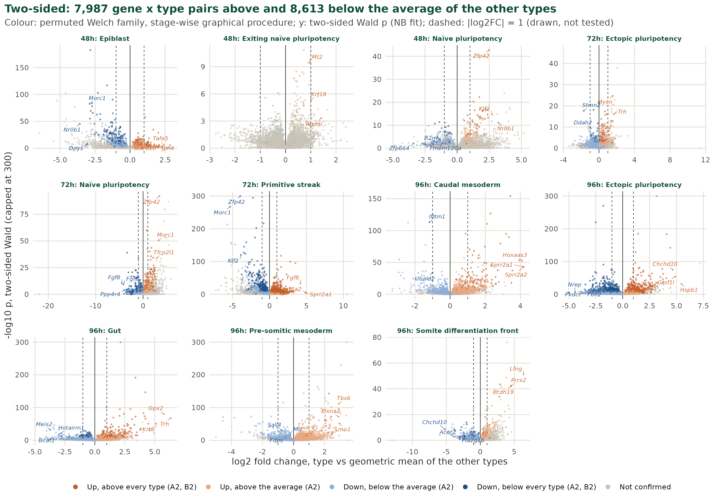
fs_deg_twosided_volcano.rds.
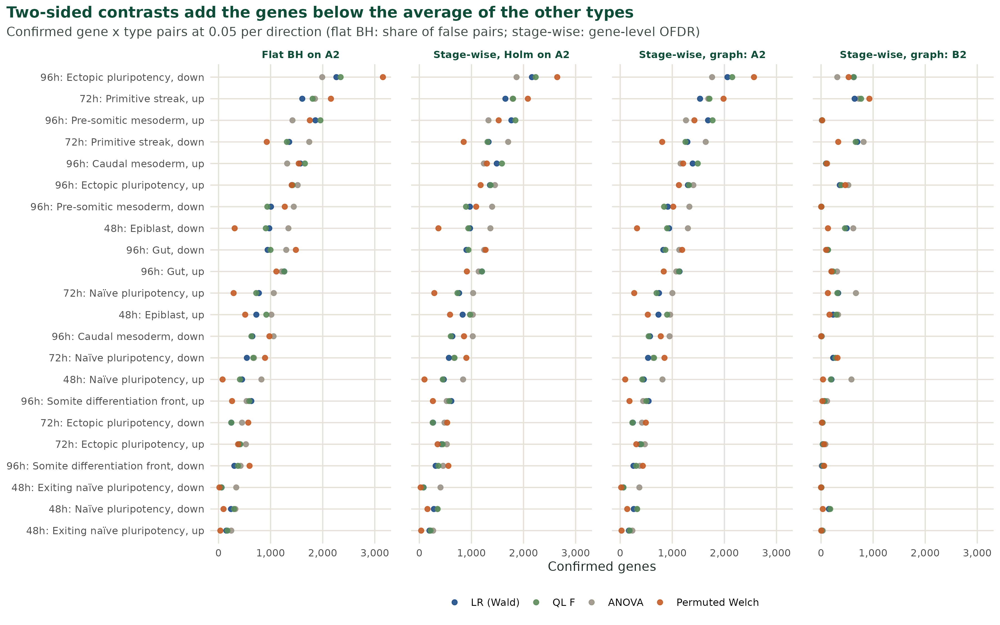
deg_counts_twosided.csv.
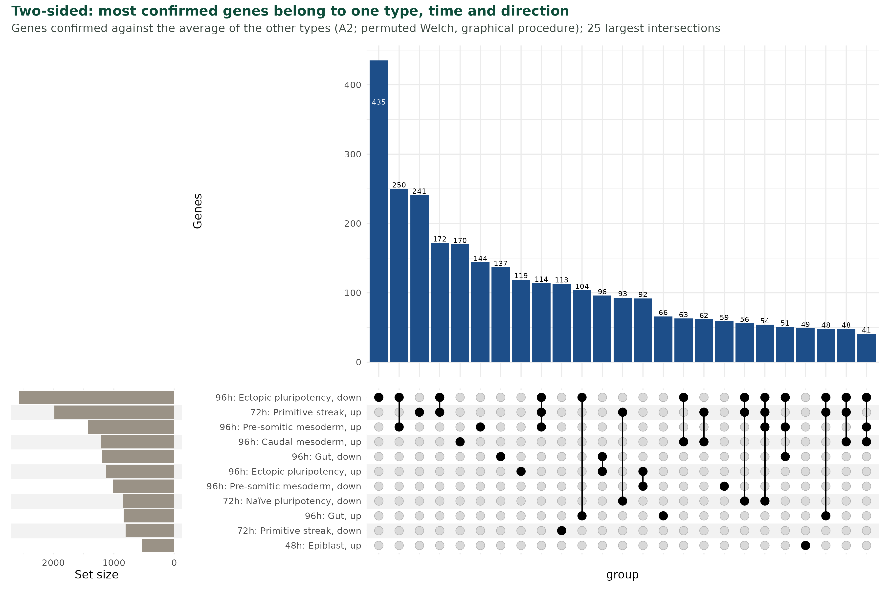
fs_deg_twosided_upset.rds.
fs_deg_twosided_heatmap.rds.
3.12 Classifier diagnostics
Diagnostics of the benchmark of Section 3.7.2, written by scripts/02_06_vis_classifier_cv.R.
All methods. Row-normalised confusion matrices (Figure 3.43) and per-type recall (Figure 3.44) show where the macro-F1 is lost: the two minority types at 48 h, naïve and ectopic pluripotency at 72 h (mean recall over methods 0.70 and 0.75), and the somite differentiation front at 96 h (0.26, 29 cells). One-versus-rest reliability curves (Figure 3.45) compare predicted and observed class frequencies on held-out cells.
fs_clf_confusion.rds.
fs_clf_recall.rds.
fs_clf_reliability.rds.
Penalised logistic models (glmnet, msgl). The checks of an unpenalised logit are adapted to p\gg n. The inner-CV deviance against \log\lambda (Figure 3.46, Figure 3.48) and the coefficient paths (Figure 3.47) show where the selected penalty sits. Events per variable (cells of the rarest type over selected genes) stay below 1 for every fit (at most 0.35), so no unpenalised refit is attempted and car::vif is replaced by the variance inflation from the inverse correlation matrix of the genes selected by each outer fold, computed on that fold’s training cells, and by its condition number (Figure 3.49). Both stay low for glmnet (largest VIF 5.7, condition number at most 12.2 over the 15 fits) and for msgl at 72 h (VIF at most 4.0); msgl at 96 h keeps about 1,000 genes per fold, correlated ones included (largest VIF 65–192 across folds), as the group penalty intends. Up to 39 % of the held-out cells get a probability of at least 0.999, close to separation: the penalty is what keeps the coefficients finite. Binned empirical logits against expression check the linearity of the log-odds for the top genes (Figure 3.50), and per-cell held-out deviance contributions flag influential cells (Figure 3.51). Independence cannot be checked without a grouping column (Note 3.1).
glmnet against \log\lambda, one curve per \alpha. Source: fs_clf_glmnet_cv.rds.
glmnet fit. Source: fs_clf_glmnet_paths.rds.
msgl against \log\lambda, 72 and 96 h. Source: fs_clf_msgl_cv.rds.
fs_clf_logit_checks.rds.
fs_clf_logit_linearity.rds.
fs_clf_logit_influence.rds.
Trees (random forest, XGBoost). Variable importance (permutation for random forest, gain for XGBoost) is shown across the outer folds (Figure 3.52); it spreads over correlated genes and is unstable when they compete. Inner-CV macro-F1 against the hyperparameters is in Figure 3.53. The class-weighted random forest at 48 h predicts epiblast for every cell whatever mtry and min_n: the n_c^{-1/2} class weights do not offset a 230-to-1 imbalance. The balanced random forest fixes this by the sampling itself (Section 3.7.2).
fs_clf_tree_vip.rds.
fs_clf_tree_tuning.rds.
sPLS-DA. Inner-CV balanced error against keepX per component (Figure 3.54) and the cells on the first two variates (Figure 3.55).
keepX. Source: fs_clf_splsda_tuning.rds.
fs_clf_splsda_variates.rds.
PLN-LDA. Training cells on the first two discriminant axes (Figure 3.56).
fs_clf_plnlda_scores.rds.
Highly variable genes. Figure 3.57 shows the mean–variance relation used to pick the 2,000 HVGs of msgl, PLN-LDA and XGBoost.
fs_clf_hvg.rds.
3.13 Enrichment of the genes that drive each type
Settings. For each type and time, the genes confirmed above the average of the other types by the primary family (permuted Welch, graphical procedure) are tested for over-representation (ORA) against the genes tested in the slot as universe, and all tested genes, ranked by the one-versus-average Welch t, are tested by gene-set enrichment (GSEA). Databases: GO biological process (clusterProfiler), Reactome (ReactomePA) and the MSigDB Hallmark collection (msigdbr); gene sets of 10 to 500 genes; BH 0.05 within each type, time, method and database. 1,756 ORA and 4,400 GSEA terms pass (enrichment_significant.csv). The significant GO terms are grouped by semantic similarity (simplifyEnrichment, binary cut at 0.7). The scripts follow the enrichment step of GastroDeconv2FateMap (scripts/06_03_enrichment_analyses.R).
Note🤖 Themes are a draft interpretation
The themes of Figure 3.58 (data/dictionaries/enrichment_themes.csv) were chosen by a language model (Claude) from the significant-term tables, with a focus on metabolism and on potency markers, and every term was checked against enrichment_significant.csv. No external model call was made. Read them as hypotheses to check against the genes, not as findings.
What the terms say (draft). The pluripotent types carry the LIF response: naïve pluripotency at 48 h and 72 h, and the ectopic pluripotency of 96 h, whose genes also over-represent ribosome biogenesis and MYC and mTORC1 targets, a growth programme that is shared with the 48 h epiblast. Cholesterol synthesis marks the 48 h epiblast and the 72 h primitive streak. Oxidative phosphorylation and the respiratory chain mark the 96 h caudal mesoderm and, by GSEA, the cells exiting naïve pluripotency at 48 h. Axial patterning marks the primitive streak (Wnt signalling), the pre-somitic mesoderm (anterior/posterior pattern specification) and the somite differentiation front (Notch). The gut over-represents hypoxia, cell adhesion and IGF transport.
enrichment_themes.csv, enrichment_significant.csv.
enrichment.csv.
enrichment.csv.
go_clusters.csv.
3.14 Code of tier (ii)
Functions are in R/02_02_stats_cross_cell.R (statistics) and R/02_02_vis_cross_cell.R (figures). scripts/02_02_stats_cross_cell_consistency.R writes output/feature_selection/tier_02/ (calibration.csv, permutation_floor.csv, kendall_<time>.csv, selected_<time>.csv, selected_floor_<time>.csv and cross_cell.rds, tracked with DVC); scripts/02_02_vis_cross_cell.R draws the figures, each with the .rds of its data in output/feature_selection/tier_02/figures/.
| Function or script | Purpose | Supports |
|---|---|---|
compare_type_effect_tests() |
NB fits M_0, M_1, R^{2}_{D} and the four tests; Welch G with n_perm = 2000 within-batch permutations |
Section 3.3.2 |
type_test_calibration() |
share of null p-values below 0.01 and 0.05 | Figure 3.7 |
type_test_kendall() |
Kendall’s \tau_b between the test rankings | Figure 3.10 |
rank_genes_omnibus() |
BH gate on the permuted Welch G, rank by R^{2}_{D} (n_select = Inf) |
Figure 3.11 |
plot_null_calibration() |
qqplotr QQ plot of null -\log_{10}p against the exponential |
Figure 3.7 |
plot_pvalue_histograms() |
unadjusted p-value histograms, optionally by expression tertile | Figure 3.8, Figure 3.9 |
gate_class(), plot_gate_rank(), plot_r2_vs_mean() |
fails BH / passes / at the floor | Figure 3.11, Figure 3.12 |
plot_overdispersion() |
\hat\phi_g against the mean, Poisson-like and upper-boundary classes | Figure 3.13 |
type_contrast_tests(), contrast_matrices(), one_sided_ab() (R/02_04_stats_deg_contrasts.R) | one-sided A and B p-values of the four families; same permutation draw as the gate | Section 3.10 |two_sided_ab(), iut_two_sided() | two-sided A2 and sign-consistent B2 p-values, same fits and permutation draw | Section 3.11 |stagewise_decisions(), graph_a_then_b() | stage-wise level \alpha_I, graphical procedure, Holm on A, flat BH | Figure 3.29 |emmeans_contrast_check() | Wald p-values against emmeans::qdrg() contrasts | Section 3.10 |plot_deg_volcano(), plot_lfc_distributions(), plot_deg_counts(), deg_heatmap(), plot_bimodality(), plot_panel_comparison() (R/02_04_vis_deg.R) | figures of the post hoc contrasts, one-sided (fs_deg_superiority_*, scripts/02_04_vis_deg.R) and two-sided (fs_deg_twosided_*, scripts/02_04_vis_deg_twosided.R) | Section 3.10, Section 3.11 |enrich_one_type(), symbol_to_entrez(), hallmark_term2gene() (R/02_05_stats_enrichment.R) | ORA and GSEA on GO BP, Reactome and Hallmark | Section 3.13 |plot_enrichment_lollipop(), plot_enrichment_manhattan(), plot_gsea_volcano(), plot_semantic_map() (R/02_05_vis_enrichment.R) | enrichment figures | Section 3.13 |select_hvg_vst(), stratified_fold_ids(), class_weights(), fit_classifier(), classification_metrics() (R/02_06_stats_classifier_cv.R) | HVGs, nested folds, class weights, the six classifiers, held-out metrics | Section 3.7.2 |plot_clf_metrics(), plot_clf_confusion(), plot_clf_recall(), plot_clf_reliability(), plot_clf_logit_checks(), plot_clf_jaccard(), plot_clf_sensitivity() and the other plot_clf_*() (R/02_06_vis_classifier_cv.R) | benchmark and diagnostic figures (fs_clf_*) | Section 3.7.2, Section 3.12 |: Code of tier (ii) and of its appendices. Scripts: scripts/02_04_stats_deg_contrasts.R writes output/feature_selection/deg/ (one-sided) and output/feature_selection/deg_twosided/ (two-sided); scripts/02_04_vis_deg.R and scripts/02_04_vis_deg_twosided.R draw their figures; scripts/02_05_stats_enrichment.R and scripts/02_05_vis_enrichment.R write output/feature_selection/enrichment/. scripts/02_06_stats_classifier_cv.R writes output/feature_selection/classifiers/ (fits in fits/, git-ignored) and scripts/02_06_vis_classifier_cv.R its figures; scripts/run_02_classifiers_parallel.sh runs both detached. {#tbl-fs-code-tier2}
Show the code
# Not run. sc[[tm]]: raw counts (genes x cells) of the scored cells of
# slot tm; cell_type[[tm]]: their labels; batch[[tm]]: their batch;
# lib[[tm]]: full library sizes (column sums of the deposited counts).
# B, the seeds and the thresholds are fixed before the run.
source("R/02_00_utils.R")
source("R/02_01_stats_quality_control.R")
source("R/02_02_stats_cross_cell.R")
times <- c("48h", "72h", "96h")
sf <- lapply(lib, function(l) l / stats::median(l))
tests <- lapply(times, function(tm) {
compare_type_effect_tests(
sc[[tm]],
cell_type[[tm]],
size_factors = sf[[tm]],
n_perm = 2000L,
seed = 20261101L,
strata = batch[[tm]],
fdr = 0.05,
min_cells_total = 20L,
min_cells_type = 2L
)
})
names(tests) <- times
# Agreement of the gene orders: all tested genes, then those passing
# the gate (permuted Welch G).
tau_all <- lapply(tests, type_test_kendall)
tau_gated <- lapply(tests, function(r) type_test_kendall(r, genes = r$welch_perm_pass))
# Conservativeness: rerun on one within-batch permutation of the labels
# (null by construction) and compare the share of p-values below 0.01
# and 0.05.
calibration <- lapply(times, function(tm) {
null_labels <- withr::with_seed(20261102L, {
lab <- cell_type[[tm]]
for (idx in split(seq_along(lab), batch[[tm]])) {
lab[idx] <- lab[idx][sample.int(length(idx))]
}
lab
})
res_null <- compare_type_effect_tests(
sc[[tm]],
null_labels,
size_factors = sf[[tm]],
n_perm = 2000L,
seed = 20261103L,
strata = batch[[tm]]
)
type_test_calibration(res_null)
})
# Gate on the permuted Welch G, rank by the deviance R^2; the fits and
# permutations of `tests` are reused, not redrawn.
ranked <- lapply(times, function(tm) {
rank_genes_omnibus(
fdr = 0.05,
n_select = Inf,
gate_test = "welch_perm",
results = tests[[tm]]
)
})
names(ranked) <- times
# Panel passed to tier (iii): genes selected at any time (the tier (i)
# markers are united with it before export).
panel <- unique(unlist(lapply(ranked, function(r) r$gene[r$selected])))
Ahlmann-Eltze, Constantin, and Wolfgang Huber. 2020. “glmGamPoi: Fitting Gamma-Poisson Generalized Linear Models on Single Cell Count Data.” Bioinformatics, ahead of print. https://doi.org/10.1093/bioinformatics/btaa1009.
Chen, Tianqi, Tong He, Michael Benesty, et al. 2026. Xgboost: Extreme Gradient Boosting. https://github.com/dmlc/xgboost.
Chiquet, Julien, Mahendra Mariadassou, and Stéphane Robin. 2025. PLNmodels: Poisson Lognormal Models. https://CRAN.R-project.org/package=PLNmodels.
Crowell, Helena L., Charlotte Soneson, Pierre-Luc Germain, et al. 2020. “Muscat Detects Subpopulation-Specific State Transitions from Multi-Sample Multi-Condition Single-Cell Transcriptomics Data.” Nature Communications 11: 6077. https://doi.org/10.1038/s41467-020-19894-4.
Erdmann-Pham, Dan D., Jonathan Fischer, Justin Hong, and Yun S. Song. 2021. “Likelihood-Based Deconvolution of Bulk Gene Expression Data Using Single-Cell References.” Genome Research 31 (10): 1794–806. https://doi.org/10.1101/gr.272344.120.
Freedman, David, and Daryl Lane. 1983. “A Nonstochastic Interpretation of Reported Significance Levels.” Journal of Business & Economic Statistics 1 (4): 292–98. https://doi.org/10.1080/07350015.1983.10509359.
Friedman, Jerome, Trevor Hastie, Rob Tibshirani, et al. 2026. Glmnet: Lasso and Elastic-Net Regularized Generalized Linear Models. https://glmnet.stanford.edu.
González-Delgado, Javier, Mathis Deronzier, Juan Cortés, and Pierre Neuvial. 2025. “Post-Clustering Inference Under Dependence.” arXiv, ahead of print. https://doi.org/10.48550/arXiv.2310.11822.
Kuhn, Max. 2026. Tune: Tidy Tuning Tools. https://tune.tidymodels.org/.
Kuhn, Max, and Davis Vaughan. 2026. Parsnip: A Common API to Modeling and Analysis Functions. https://github.com/tidymodels/parsnip.
Le Cao, Kim-Anh, Florian Rohart, Ignacio Gonzalez, and Sebastien Dejean. 2026. mixOmics: Omics Data Integration Project. https://doi.org/10.18129/B9.bioc.mixOmics.
Leek, Jeffrey T., W. Evan Johnson, Hilary S. Parker, et al. 2026. Sva: Surrogate Variable Analysis. https://doi.org/10.18129/B9.bioc.sva.
Lu, Songjian, Jiyuan Yang, Lei Yan, et al. 2025. “Transcriptome Size Matters for Single-Cell RNA-seq Normalization and Bulk Deconvolution.” Nature Communications 16 (1). https://doi.org/10.1038/s41467-025-56623-1.
Luecken, Malte D, and Fabian J Theis. 2019. “Current Best Practices in Single-Cell RNA-seq Analysis: A Tutorial.” Molecular Systems Biology 15 (6): e8746. https://doi.org/10.15252/msb.20188746.
Lund, Steven P., Dan Nettleton, Davis J. McCarthy, and Gordon K. Smyth. 2012. “Detecting Differential Expression in RNA-Sequence Data Using Quasi-Likelihood with Shrunken Dispersion Estimates.” Statistical Applications in Genetics and Molecular Biology 11 (5). https://doi.org/10.1515/1544-6115.1826.
Melnykov, Volodymyr, Wei-Chen Chen, and Ranjan Maitra. 2012. “MixSim: An R Package for Simulating Data to Study Performance of Clustering Algorithms.” Journal of Statistical Software 51. https://doi.org/10.18637/jss.v051.i12.
Melnykov, Volodymyr, Wei-Chen Chen, and Ranjan Maitra. 2021. MixSim: Simulating Data to Study Performance of Clustering Algorithms. https://CRAN.R-project.org/package=MixSim.
Mersmann, Olaf, Heike Trautmann, Detlef Steuer, and Bernd Bischl. 2020. Mco: Multiple Criteria Optimization Algorithms and Related Functions. https://CRAN.R-project.org/package=mco.
Sarkar, Abhishek, and Matthew Stephens. 2021. “Separating Measurement and Expression Models Clarifies Confusion in Single-Cell RNA Sequencing Analysis.” Nature Genetics 53 (6): 770–77. https://doi.org/10.1038/s41588-021-00873-4.
Squair, Jordan W., Matthieu Gautier, Claudia Kathe, et al. 2021. “Confronting False Discoveries in Single-Cell Differential Expression.” Nature Communications 12 (1). https://doi.org/10.1038/s41467-021-25960-2.
Suppinger, Simon, Marietta Zinner, Nadim Aizarani, et al. 2023. “Multimodal Characterization of Murine Gastruloid Development.” Cell Stem Cell 30 (6): 867–84. https://doi.org/10.1016/j.stem.2023.04.018.
Vincent, Martin. 2019. Msgl: Multinomial Sparse Group Lasso. http://www.sciencedirect.com/science/article/pii/S0167947313002168.
Wang, Xuran, Jihwan Park, Katalin Susztak, Nancy R. Zhang, and Mingyao Li. 2019. “Bulk Tissue Cell Type Deconvolution with Multi-Subject Single-Cell Expression Reference.” Nature Communications 10. https://doi.org/10.1038/s41467-018-08023-x.
Wright, Marvin N. 2026. Ranger: A Fast Implementation of Random Forests. https://imbs-hl.github.io/ranger/.
Zimmerman, Kip D., Mark A. Espeland, and Carl D. Langefeld. 2021. “A Practical Solution to Pseudoreplication Bias in Single-Cell Studies.” Nature Communications 12 (1): 738. https://doi.org/10.1038/s41467-021-21038-1.